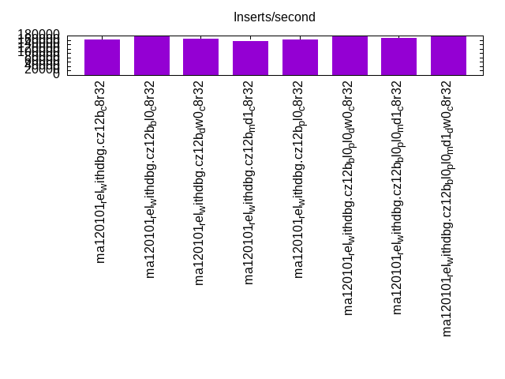
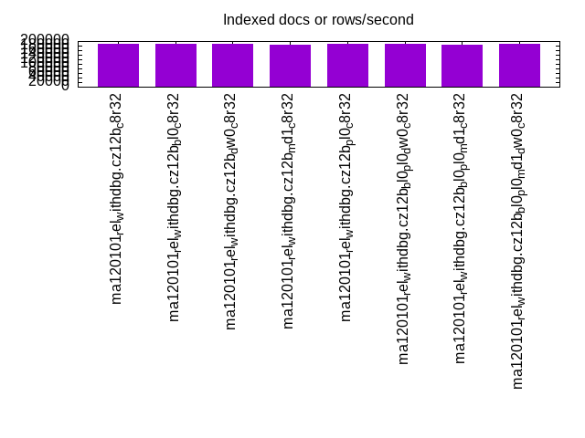
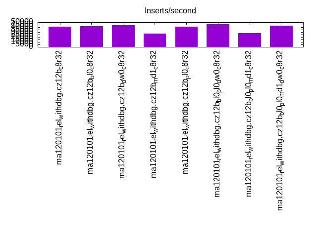
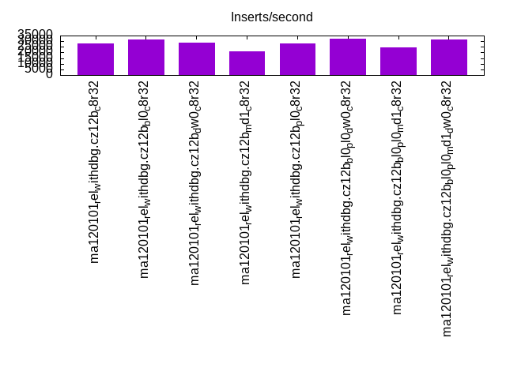
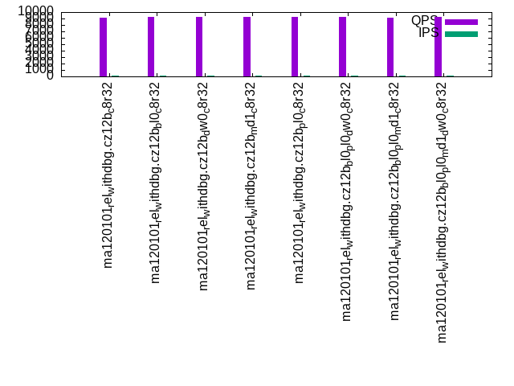
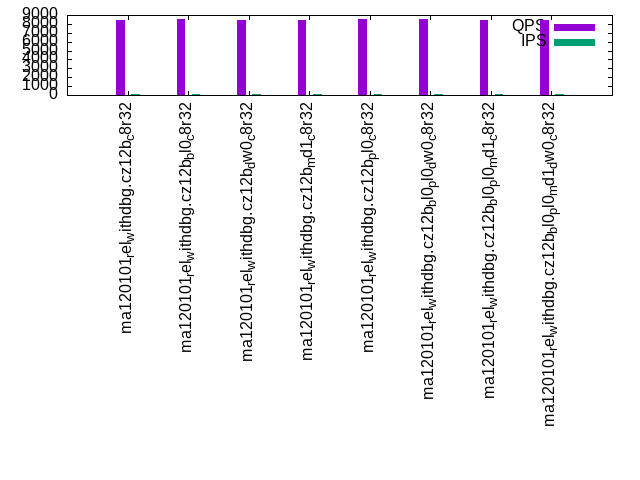
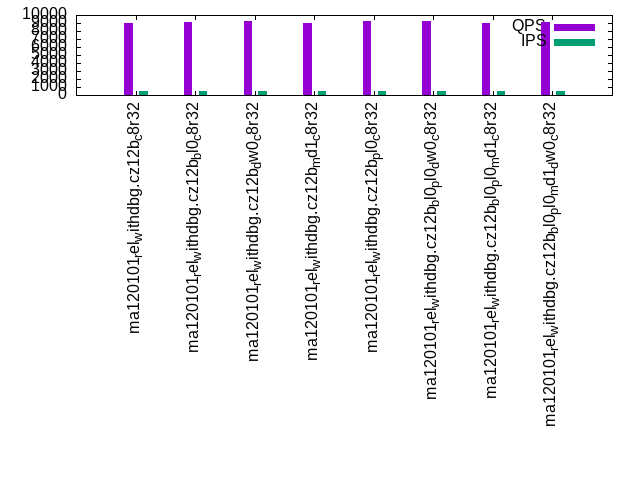
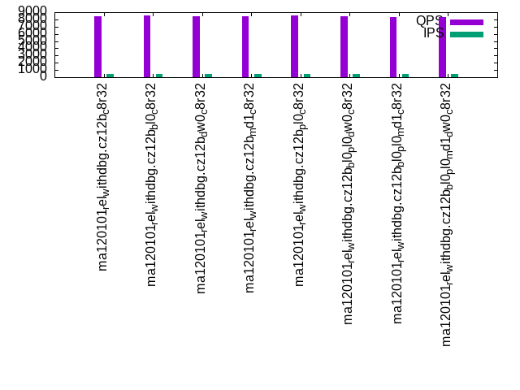
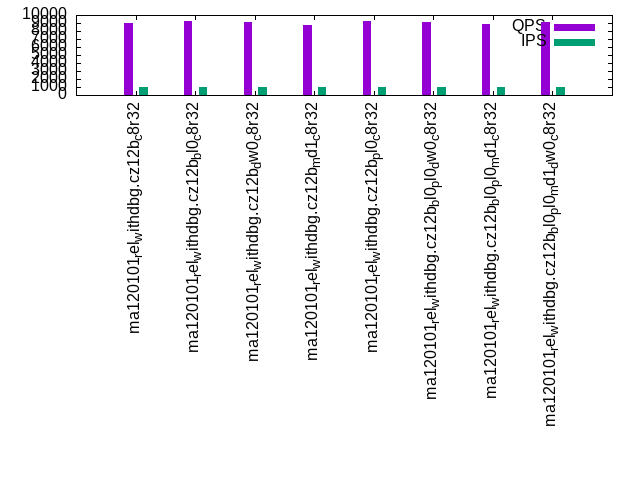
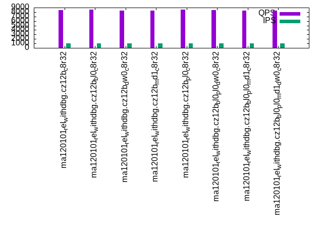

This is a report for the insert benchmark with 30M docs and 1 client(s). It is generated by scripts (bash, awk, sed) and Tufte might not be impressed. An overview of the insert benchmark is here and a short update is here. Below, by DBMS, I mean DBMS+version.config. An example is my8020.c10b40 where my means MySQL, 8020 is version 8.0.20 and c10b40 is the name for the configuration file.
The test server has 8 AMD cores, 32G RAM and an NVMe device for the database. The benchmark was run with 1 client and there were 1 or 3 connections per client (1 for queries or inserts without rate limits, 1+1 for rate limited inserts+deletes). It uses 1 table with a table per client. It loads 30M rows per table without secondary indexes, creates 3 secondary indexes per table, then inserts 40m+10m rows per table with a delete per insert to avoid growing the table. It then does 6 read+write tests for 1800s each that do queries as fast as possible with 100,100,500,500,1000,1000 inserts/s and the same for deletes/s per client concurrent with the queries. The database is cached by MariaDB Clients and the DBMS share one server.
The tested DBMS are:
The numbers are inserts/s for l.i0, l.i1 and l.i2, indexed docs (or rows) /s for l.x and queries/s for qr100, qp100 thru qr1000, qp1000" The values are the average rate over the entire test for inserts (IPS) and queries (QPS). The range of values for IPS and QPS is split into 3 parts: bottom 25%, middle 50%, top 25%. Values in the bottom 25% have a red background, values in the top 25% have a green background and values in the middle have no color. A gray background is used for values that can be ignored because the DBMS did not sustain the target insert rate. Red backgrounds are not used when the minimum value is within 80% of the max value.
| dbms | l.i0 | l.x | l.i1 | l.i2 | qr100 | qp100 | qr500 | qp500 | qr1000 | qp1000 |
|---|---|---|---|---|---|---|---|---|---|---|
| ma120101_rel_withdbg.cz12b_c8r32 | 163043 | 188680 | 40858 | 27778 | 9084 | 8392 | 9050 | 8390 | 9032 | 8424 |
| ma120101_rel_withdbg.cz12b_bl0_c8r32 | 177515 | 189874 | 42061 | 31153 | 9224 | 8560 | 9143 | 8510 | 9200 | 8505 |
| ma120101_rel_withdbg.cz12b_dw0_c8r32 | 163934 | 187501 | 44101 | 28490 | 9279 | 8409 | 9249 | 8466 | 9109 | 8348 |
| ma120101_rel_withdbg.cz12b_md1_c8r32 | 155440 | 182927 | 26900 | 21322 | 9204 | 8433 | 9039 | 8414 | 8707 | 8310 |
| ma120101_rel_withdbg.cz12b_pl0_c8r32 | 163043 | 187501 | 40775 | 28011 | 9240 | 8544 | 9240 | 8529 | 9258 | 8502 |
| ma120101_rel_withdbg.cz12b_bl0_pl0_dw0_c8r32 | 178571 | 189874 | 45872 | 32362 | 9212 | 8517 | 9229 | 8477 | 9158 | 8463 |
| ma120101_rel_withdbg.cz12b_bl0_pl0_md1_c8r32 | 168539 | 185186 | 27758 | 24272 | 9127 | 8451 | 8976 | 8371 | 8845 | 8297 |
| ma120101_rel_withdbg.cz12b_bl0_pl0_md1_dw0_c8r32 | 175438 | 188680 | 43290 | 31446 | 9194 | 8391 | 9128 | 8352 | 9090 | 8319 |
This table has relative throughput, throughput for the DBMS relative to the DBMS in the first line, using the absolute throughput from the previous table. Values less than 0.95 have a yellow background. Values greater than 1.05 have a blue background.
| dbms | l.i0 | l.x | l.i1 | l.i2 | qr100 | qp100 | qr500 | qp500 | qr1000 | qp1000 |
|---|---|---|---|---|---|---|---|---|---|---|
| ma120101_rel_withdbg.cz12b_c8r32 | 1.00 | 1.00 | 1.00 | 1.00 | 1.00 | 1.00 | 1.00 | 1.00 | 1.00 | 1.00 |
| ma120101_rel_withdbg.cz12b_bl0_c8r32 | 1.09 | 1.01 | 1.03 | 1.12 | 1.02 | 1.02 | 1.01 | 1.01 | 1.02 | 1.01 |
| ma120101_rel_withdbg.cz12b_dw0_c8r32 | 1.01 | 0.99 | 1.08 | 1.03 | 1.02 | 1.00 | 1.02 | 1.01 | 1.01 | 0.99 |
| ma120101_rel_withdbg.cz12b_md1_c8r32 | 0.95 | 0.97 | 0.66 | 0.77 | 1.01 | 1.00 | 1.00 | 1.00 | 0.96 | 0.99 |
| ma120101_rel_withdbg.cz12b_pl0_c8r32 | 1.00 | 0.99 | 1.00 | 1.01 | 1.02 | 1.02 | 1.02 | 1.02 | 1.03 | 1.01 |
| ma120101_rel_withdbg.cz12b_bl0_pl0_dw0_c8r32 | 1.10 | 1.01 | 1.12 | 1.17 | 1.01 | 1.01 | 1.02 | 1.01 | 1.01 | 1.00 |
| ma120101_rel_withdbg.cz12b_bl0_pl0_md1_c8r32 | 1.03 | 0.98 | 0.68 | 0.87 | 1.00 | 1.01 | 0.99 | 1.00 | 0.98 | 0.98 |
| ma120101_rel_withdbg.cz12b_bl0_pl0_md1_dw0_c8r32 | 1.08 | 1.00 | 1.06 | 1.13 | 1.01 | 1.00 | 1.01 | 1.00 | 1.01 | 0.99 |
This lists the average rate of inserts/s for the tests that do inserts concurrent with queries. For such tests the query rate is listed in the table above. The read+write tests are setup so that the insert rate should match the target rate every second. Cells that are not at least 95% of the target have a red background to indicate a failure to satisfy the target.
| dbms | qr100.L1 | qp100.L2 | qr500.L3 | qp500.L4 | qr1000.L5 | qp1000.L6 |
|---|---|---|---|---|---|---|
| ma120101_rel_withdbg.cz12b_c8r32 | 100 | 100 | 500 | 500 | 1000 | 1000 |
| ma120101_rel_withdbg.cz12b_bl0_c8r32 | 100 | 100 | 500 | 500 | 1000 | 999 |
| ma120101_rel_withdbg.cz12b_dw0_c8r32 | 100 | 100 | 500 | 500 | 999 | 1000 |
| ma120101_rel_withdbg.cz12b_md1_c8r32 | 100 | 100 | 500 | 500 | 999 | 999 |
| ma120101_rel_withdbg.cz12b_pl0_c8r32 | 100 | 100 | 500 | 500 | 999 | 1000 |
| ma120101_rel_withdbg.cz12b_bl0_pl0_dw0_c8r32 | 100 | 100 | 500 | 500 | 1000 | 1000 |
| ma120101_rel_withdbg.cz12b_bl0_pl0_md1_c8r32 | 100 | 100 | 500 | 500 | 999 | 999 |
| ma120101_rel_withdbg.cz12b_bl0_pl0_md1_dw0_c8r32 | 100 | 100 | 500 | 500 | 1000 | 1000 |
| target | 100 | 100 | 500 | 500 | 1000 | 1000 |
l.i0: load without secondary indexes. Graphs for performance per 1-second interval are here.
Average throughput:
Insert response time histogram: each cell has the percentage of responses that take <= the time in the header and max is the max response time in seconds. For the max column values in the top 25% of the range have a red background and in the bottom 25% of the range have a green background. The red background is not used when the min value is within 80% of the max value.
| dbms | 256us | 1ms | 4ms | 16ms | 64ms | 256ms | 1s | 4s | 16s | gt | max |
|---|---|---|---|---|---|---|---|---|---|---|---|
| ma120101_rel_withdbg.cz12b_c8r32 | 99.698 | 0.110 | 0.055 | 0.133 | 0.004 | 0.168 | |||||
| ma120101_rel_withdbg.cz12b_bl0_c8r32 | 99.701 | 0.111 | 0.065 | 0.123 | 0.001 | 0.227 | |||||
| ma120101_rel_withdbg.cz12b_dw0_c8r32 | 99.701 | 0.106 | 0.111 | 0.078 | 0.004 | 0.119 | |||||
| ma120101_rel_withdbg.cz12b_md1_c8r32 | 99.429 | 0.235 | 0.189 | 0.134 | 0.013 | 0.145 | |||||
| ma120101_rel_withdbg.cz12b_pl0_c8r32 | 99.703 | 0.105 | 0.092 | 0.096 | 0.004 | 0.207 | |||||
| ma120101_rel_withdbg.cz12b_bl0_pl0_dw0_c8r32 | 99.694 | 0.117 | 0.162 | 0.027 | 0.038 | ||||||
| ma120101_rel_withdbg.cz12b_bl0_pl0_md1_c8r32 | 99.436 | 0.226 | 0.168 | 0.161 | 0.008 | 0.090 | |||||
| ma120101_rel_withdbg.cz12b_bl0_pl0_md1_dw0_c8r32 | 99.438 | 0.216 | 0.302 | 0.044 | 0.044 |
Performance metrics for the DBMS listed above. Some are normalized by throughput, others are not. Legend for results is here.
ips qps rps rmbps wps wmbps rpq rkbpq wpi wkbpi csps cpups cspq cpupq dbgb1 dbgb2 rss maxop p50 p99 tag 163043 0 0 0.0 421.2 37.2 0.000 0.000 0.003 0.234 21313 21.6 0.131 11 2.0 32.8 2.5 0.168 164780 133884 ma120101_rel_withdbg.cz12b_c8r32 177515 0 0 0.0 296.1 21.8 0.000 0.000 0.002 0.126 22784 22.5 0.128 10 2.0 32.8 2.3 0.227 179180 147786 ma120101_rel_withdbg.cz12b_bl0_c8r32 163934 0 0 0.0 434.5 37.5 0.000 0.000 0.003 0.234 21462 21.8 0.131 11 2.0 32.8 2.5 0.119 165277 143480 ma120101_rel_withdbg.cz12b_dw0_c8r32 155440 0 0 0.0 1510.6 56.1 0.000 0.000 0.010 0.369 22732 21.4 0.146 11 2.0 32.8 2.4 0.145 156278 128085 ma120101_rel_withdbg.cz12b_md1_c8r32 163043 0 0 0.0 434.7 37.4 0.000 0.000 0.003 0.235 21294 21.5 0.131 11 2.0 32.8 2.5 0.207 164276 144279 ma120101_rel_withdbg.cz12b_pl0_c8r32 178571 0 0 0.0 317.0 22.1 0.000 0.000 0.002 0.127 22823 22.4 0.128 10 2.0 32.8 2.3 0.038 179573 175676 ma120101_rel_withdbg.cz12b_bl0_pl0_dw0_c8r32 168539 0 0 0.0 1550.5 44.6 0.000 0.000 0.009 0.271 24342 22.1 0.144 10 2.0 32.8 2.6 0.090 168778 152182 ma120101_rel_withdbg.cz12b_bl0_pl0_md1_c8r32 175438 0 0 0.0 1615.8 41.6 0.000 0.000 0.009 0.243 27536 22.9 0.157 10 2.0 32.8 2.3 0.044 176779 169277 ma120101_rel_withdbg.cz12b_bl0_pl0_md1_dw0_c8r32
Average values from iostat.
r/s rkB/s rrqm/s %rrqm r_await rareq-s w/s wkB/s wrqm/s %wrqm w_await wareq-s d/s dkB/s drqm/s %drqm d_await dareq-s f/s f_await aqu-sz %util 0.406 3.822 0.000 0.000 1.894 2.768 421.2 38124.9 24.14 8.532 3.795 111.2 0.599 4.930 0.000 0.000 0.348 2.909 8.311 1.685 1.094 6.669 ma120101_rel_withdbg.cz12b_c8r32 0.297 3.588 0.000 0.000 3.760 2.292 296.1 22290.5 19.64 8.877 4.093 106.6 0.006 0.024 0.000 0.000 0.030 0.121 8.352 1.605 0.863 6.313 ma120101_rel_withdbg.cz12b_bl0_c8r32 0.417 3.867 0.000 0.000 2.394 2.657 434.5 38407.0 24.66 8.215 3.498 106.5 0.450 41.01 0.000 0.000 0.359 28.60 8.042 1.280 0.966 6.338 ma120101_rel_withdbg.cz12b_dw0_c8r32 0.374 3.579 0.000 0.000 2.476 2.833 1510.6 57422.9 54.96 3.562 0.961 37.13 0.332 76.65 0.000 0.000 0.424 79.95 72.00 1.070 1.495 15.45 ma120101_rel_withdbg.cz12b_md1_c8r32 0.406 3.822 0.000 0.000 2.609 2.879 434.7 38326.7 24.04 8.179 3.651 108.4 0.356 5.711 0.000 0.000 0.450 5.622 8.333 1.406 0.933 6.445 ma120101_rel_withdbg.cz12b_pl0_c8r32 0.297 3.588 0.000 0.000 3.761 2.292 317.0 22664.8 20.68 9.115 4.053 108.6 0.079 0.485 0.000 0.000 0.283 0.313 8.267 0.884 0.834 5.730 ma120101_rel_withdbg.cz12b_bl0_pl0_dw0_c8r32 0.280 3.383 0.000 0.000 2.803 2.161 1550.5 45715.9 51.68 3.266 0.977 29.76 0.029 0.663 0.000 0.000 0.443 2.914 77.34 1.199 1.530 16.92 ma120101_rel_withdbg.cz12b_bl0_pl0_md1_c8r32 0.288 3.482 0.000 0.000 2.679 2.225 1615.8 42594.2 54.99 3.308 0.594 26.43 0.006 0.024 0.000 0.000 0.000 0.118 47.29 0.583 0.975 11.84 ma120101_rel_withdbg.cz12b_bl0_pl0_md1_dw0_c8r32
l.x: create secondary indexes.
Average throughput:
Performance metrics for the DBMS listed above. Some are normalized by throughput, others are not. Legend for results is here.
ips qps rps rmbps wps wmbps rpq rkbpq wpi wkbpi csps cpups cspq cpupq dbgb1 dbgb2 rss maxop p50 p99 tag 188680 0 0 0.0 2411.3 167.3 0.000 0.000 0.013 0.908 6994 12.5 0.037 5 4.2 35.0 4.1 0.002 NA NA ma120101_rel_withdbg.cz12b_c8r32 189874 0 0 0.0 2489.8 169.2 0.000 0.000 0.013 0.913 7427 12.3 0.039 5 4.2 35.0 4.2 0.002 NA NA ma120101_rel_withdbg.cz12b_bl0_c8r32 187501 0 0 0.0 2367.5 164.9 0.000 0.000 0.013 0.900 6849 12.6 0.037 5 4.2 35.0 4.1 0.001 NA NA ma120101_rel_withdbg.cz12b_dw0_c8r32 182927 0 0 0.0 1934.6 156.0 0.000 0.000 0.011 0.873 4300 12.2 0.024 5 4.2 35.0 4.1 0.001 NA NA ma120101_rel_withdbg.cz12b_md1_c8r32 187501 0 0 0.0 2420.1 167.4 0.000 0.000 0.013 0.914 7195 12.5 0.038 5 4.2 35.0 4.1 0.001 NA NA ma120101_rel_withdbg.cz12b_pl0_c8r32 189874 0 0 0.0 2425.2 168.1 0.000 0.000 0.013 0.907 7179 12.4 0.038 5 4.2 35.0 4.2 0.001 NA NA ma120101_rel_withdbg.cz12b_bl0_pl0_dw0_c8r32 185186 0 0 0.0 2003.6 158.1 0.000 0.000 0.011 0.874 4673 12.0 0.025 5 4.2 35.0 4.1 0.001 NA NA ma120101_rel_withdbg.cz12b_bl0_pl0_md1_c8r32 188680 0 0 0.0 1987.0 160.7 0.000 0.000 0.011 0.872 4527 12.3 0.024 5 4.2 35.0 4.2 0.001 NA NA ma120101_rel_withdbg.cz12b_bl0_pl0_md1_dw0_c8r32
Average values from iostat.
r/s rkB/s rrqm/s %rrqm r_await rareq-s w/s wkB/s wrqm/s %wrqm w_await wareq-s d/s dkB/s drqm/s %drqm d_await dareq-s f/s f_await aqu-sz %util 0.181 0.723 0.000 0.000 0.016 1.419 2411.3 171274 17.63 1.514 0.130 99.74 0.729 7944.8 0.000 0.000 0.107 820.8 7.865 1.327 0.218 6.379 ma120101_rel_withdbg.cz12b_c8r32 0.168 0.671 0.000 0.000 0.027 1.806 2489.8 173277 18.14 1.451 0.165 98.32 0.781 7945.3 0.000 0.000 0.099 710.7 8.374 1.438 0.302 6.603 ma120101_rel_withdbg.cz12b_bl0_c8r32 0.175 0.700 0.000 0.000 0.047 1.875 2367.5 168843 19.47 1.719 0.179 100.0 1.619 16140.1 0.000 0.000 0.077 976.7 8.237 1.050 0.273 6.337 ma120101_rel_withdbg.cz12b_dw0_c8r32 0.188 0.750 0.000 0.000 0.034 1.375 1934.6 159768 18.77 0.739 0.090 108.0 0.487 7709.1 0.000 0.000 0.074 1165.9 7.787 1.369 0.197 6.085 ma120101_rel_withdbg.cz12b_md1_c8r32 0.148 0.594 0.000 0.000 0.039 1.548 2420.1 171397 17.21 1.408 0.131 97.69 0.819 7944.9 0.000 0.000 0.105 675.9 7.613 1.398 0.228 6.314 ma120101_rel_withdbg.cz12b_pl0_c8r32 0.239 7.355 0.000 0.000 0.051 4.092 2425.2 172184 17.85 1.523 0.160 98.83 0.748 7944.7 0.000 0.000 0.100 760.0 7.658 1.157 0.251 6.486 ma120101_rel_withdbg.cz12b_bl0_pl0_dw0_c8r32 0.206 0.825 0.000 0.000 0.037 2.000 2003.6 161850 19.42 0.682 0.103 106.8 0.394 7696.5 0.000 0.000 0.064 1792.3 8.400 1.333 0.239 6.386 ma120101_rel_withdbg.cz12b_bl0_pl0_md1_c8r32 0.187 0.748 0.000 0.000 0.054 1.806 1987.0 164562 18.81 0.627 0.107 108.6 0.761 7944.9 0.000 0.000 0.058 758.5 7.684 1.083 0.283 5.780 ma120101_rel_withdbg.cz12b_bl0_pl0_md1_dw0_c8r32
l.i1: continue load after secondary indexes created with 50 inserts per transaction. Graphs for performance per 1-second interval are here.
Average throughput:
Insert response time histogram: each cell has the percentage of responses that take <= the time in the header and max is the max response time in seconds. For the max column values in the top 25% of the range have a red background and in the bottom 25% of the range have a green background. The red background is not used when the min value is within 80% of the max value.
| dbms | 256us | 1ms | 4ms | 16ms | 64ms | 256ms | 1s | 4s | 16s | gt | max |
|---|---|---|---|---|---|---|---|---|---|---|---|
| ma120101_rel_withdbg.cz12b_c8r32 | 41.841 | 56.770 | 1.196 | 0.189 | 0.004 | nonzero | 0.267 | ||||
| ma120101_rel_withdbg.cz12b_bl0_c8r32 | 51.841 | 46.754 | 1.211 | 0.191 | 0.003 | 0.242 | |||||
| ma120101_rel_withdbg.cz12b_dw0_c8r32 | 39.047 | 60.461 | 0.478 | 0.014 | 0.001 | 0.125 | |||||
| ma120101_rel_withdbg.cz12b_md1_c8r32 | 35.432 | 56.744 | 6.760 | 1.060 | 0.005 | 0.192 | |||||
| ma120101_rel_withdbg.cz12b_pl0_c8r32 | 41.571 | 57.054 | 1.189 | 0.182 | 0.004 | 0.254 | |||||
| ma120101_rel_withdbg.cz12b_bl0_pl0_dw0_c8r32 | 51.842 | 47.682 | 0.465 | 0.010 | nonzero | 0.087 | |||||
| ma120101_rel_withdbg.cz12b_bl0_pl0_md1_c8r32 | 43.891 | 48.484 | 6.644 | 0.977 | 0.005 | 0.215 | |||||
| ma120101_rel_withdbg.cz12b_bl0_pl0_md1_dw0_c8r32 | 48.244 | 50.559 | 1.165 | 0.032 | nonzero | 0.085 |
Delete response time histogram: each cell has the percentage of responses that take <= the time in the header and max is the max response time in seconds. For the max column values in the top 25% of the range have a red background and in the bottom 25% of the range have a green background. The red background is not used when the min value is within 80% of the max value.
| dbms | 256us | 1ms | 4ms | 16ms | 64ms | 256ms | 1s | 4s | 16s | gt | max |
|---|---|---|---|---|---|---|---|---|---|---|---|
| ma120101_rel_withdbg.cz12b_c8r32 | 88.233 | 10.594 | 0.999 | 0.170 | 0.003 | nonzero | 0.264 | ||||
| ma120101_rel_withdbg.cz12b_bl0_c8r32 | 90.272 | 8.539 | 1.015 | 0.172 | 0.002 | 0.239 | |||||
| ma120101_rel_withdbg.cz12b_dw0_c8r32 | 88.616 | 11.040 | 0.335 | 0.009 | 0.001 | 0.125 | |||||
| ma120101_rel_withdbg.cz12b_md1_c8r32 | 80.630 | 12.465 | 6.001 | 0.901 | 0.003 | 0.135 | |||||
| ma120101_rel_withdbg.cz12b_pl0_c8r32 | 88.550 | 10.281 | 1.007 | 0.160 | 0.002 | 0.148 | |||||
| ma120101_rel_withdbg.cz12b_bl0_pl0_dw0_c8r32 | 90.824 | 8.835 | 0.333 | 0.009 | nonzero | 0.077 | |||||
| ma120101_rel_withdbg.cz12b_bl0_pl0_md1_c8r32 | 82.606 | 10.568 | 5.984 | 0.840 | 0.002 | 0.115 | |||||
| ma120101_rel_withdbg.cz12b_bl0_pl0_md1_dw0_c8r32 | 88.779 | 10.262 | 0.938 | 0.021 | nonzero | 0.076 |
Performance metrics for the DBMS listed above. Some are normalized by throughput, others are not. Legend for results is here.
ips qps rps rmbps wps wmbps rpq rkbpq wpi wkbpi csps cpups cspq cpupq dbgb1 dbgb2 rss maxop p50 p99 tag 40858 0 0 0.0 3796.4 139.9 0.000 0.000 0.093 3.506 33151 32.5 0.811 64 5.8 36.6 6.4 0.267 41895 15898 ma120101_rel_withdbg.cz12b_c8r32 42061 0 0 0.0 3828.5 136.8 0.000 0.000 0.091 3.330 33472 32.7 0.796 62 5.9 36.7 6.5 0.242 43295 16848 ma120101_rel_withdbg.cz12b_bl0_c8r32 44101 0 0 0.0 3785.7 117.5 0.000 0.000 0.086 2.728 37529 35.2 0.851 64 5.9 36.7 6.5 0.125 46594 15748 ma120101_rel_withdbg.cz12b_dw0_c8r32 26900 0 0 0.0 11712.0 338.6 0.000 0.000 0.435 12.890 53978 25.7 2.007 76 5.8 36.6 6.3 0.192 27797 7199 ma120101_rel_withdbg.cz12b_md1_c8r32 40775 0 0 0.0 3797.0 139.9 0.000 0.000 0.093 3.514 33153 32.6 0.813 64 5.8 36.6 6.4 0.254 42245 15248 ma120101_rel_withdbg.cz12b_pl0_c8r32 45872 0 0 0.0 3890.6 115.1 0.000 0.000 0.085 2.570 38426 35.6 0.838 62 5.8 36.6 6.4 0.087 48644 14748 ma120101_rel_withdbg.cz12b_bl0_pl0_dw0_c8r32 27758 0 0 0.0 11717.6 335.0 0.000 0.000 0.422 12.359 54016 25.8 1.946 74 5.8 36.6 6.3 0.215 27997 8799 ma120101_rel_withdbg.cz12b_bl0_pl0_md1_c8r32 43290 0 0 0.0 10684.9 216.9 0.000 0.000 0.247 5.130 65736 36.2 1.518 67 5.8 36.7 6.4 0.085 47044 11649 ma120101_rel_withdbg.cz12b_bl0_pl0_md1_dw0_c8r32
Average values from iostat.
r/s rkB/s rrqm/s %rrqm r_await rareq-s w/s wkB/s wrqm/s %wrqm w_await wareq-s d/s dkB/s drqm/s %drqm d_await dareq-s f/s f_await aqu-sz %util 0.062 0.246 0.000 0.000 0.099 0.718 3796.4 143255 40.28 0.999 0.788 38.53 0.185 2.880 0.000 0.000 0.322 3.384 49.50 1.439 2.977 16.20 ma120101_rel_withdbg.cz12b_c8r32 0.008 0.034 0.000 0.000 0.237 0.147 3828.5 140072 46.62 1.135 0.787 37.47 0.037 0.581 0.000 0.000 0.319 1.019 50.69 1.397 3.017 16.31 ma120101_rel_withdbg.cz12b_bl0_c8r32 0.072 0.287 0.000 0.000 0.365 0.796 3785.7 120298 52.39 1.137 0.726 32.48 0.240 15.61 0.000 0.000 0.190 9.721 30.11 1.082 2.655 14.16 ma120101_rel_withdbg.cz12b_dw0_c8r32 0.034 0.135 0.000 0.000 0.177 0.579 11712.0 346735 107.0 0.902 0.231 29.60 0.114 28.76 0.000 0.000 0.224 45.77 200.7 1.270 2.959 49.36 ma120101_rel_withdbg.cz12b_md1_c8r32 0.051 0.204 0.000 0.000 0.225 0.694 3797.0 143283 40.73 0.998 0.793 38.63 0.149 2.486 0.000 0.000 0.189 3.120 49.40 1.407 3.001 16.29 ma120101_rel_withdbg.cz12b_pl0_c8r32 0.008 0.032 0.000 0.000 0.207 0.161 3890.6 117889 47.42 1.001 0.759 31.21 0.020 0.285 0.000 0.000 0.122 0.351 30.63 1.033 2.816 14.13 ma120101_rel_withdbg.cz12b_bl0_pl0_dw0_c8r32 0.008 0.033 0.000 0.000 0.115 0.125 11717.6 343072 128.8 1.084 0.236 29.28 0.008 0.064 0.000 0.000 0.116 0.250 200.4 1.263 3.012 48.80 ma120101_rel_withdbg.cz12b_bl0_pl0_md1_c8r32 0.010 0.039 0.000 0.000 0.158 0.196 10684.9 222075 127.8 1.136 0.215 20.76 0.014 0.157 0.000 0.000 0.132 0.224 98.71 0.990 2.391 36.59 ma120101_rel_withdbg.cz12b_bl0_pl0_md1_dw0_c8r32
l.i2: continue load after secondary indexes created with 5 inserts per transaction. Graphs for performance per 1-second interval are here.
Average throughput:
Insert response time histogram: each cell has the percentage of responses that take <= the time in the header and max is the max response time in seconds. For the max column values in the top 25% of the range have a red background and in the bottom 25% of the range have a green background. The red background is not used when the min value is within 80% of the max value.
| dbms | 256us | 1ms | 4ms | 16ms | 64ms | 256ms | 1s | 4s | 16s | gt | max |
|---|---|---|---|---|---|---|---|---|---|---|---|
| ma120101_rel_withdbg.cz12b_c8r32 | 98.735 | 1.159 | 0.042 | 0.062 | 0.002 | 0.052 | |||||
| ma120101_rel_withdbg.cz12b_bl0_c8r32 | 99.356 | 0.527 | 0.042 | 0.072 | 0.003 | 0.051 | |||||
| ma120101_rel_withdbg.cz12b_dw0_c8r32 | 98.861 | 1.115 | 0.019 | 0.005 | 0.001 | nonzero | 0.091 | ||||
| ma120101_rel_withdbg.cz12b_md1_c8r32 | 96.406 | 2.678 | 0.343 | 0.561 | 0.012 | nonzero | 0.072 | ||||
| ma120101_rel_withdbg.cz12b_pl0_c8r32 | 98.793 | 1.098 | 0.042 | 0.065 | 0.003 | 0.056 | |||||
| ma120101_rel_withdbg.cz12b_bl0_pl0_dw0_c8r32 | 99.504 | 0.471 | 0.021 | 0.005 | nonzero | 0.017 | |||||
| ma120101_rel_withdbg.cz12b_bl0_pl0_md1_c8r32 | 97.688 | 1.458 | 0.343 | 0.502 | 0.009 | 0.059 | |||||
| ma120101_rel_withdbg.cz12b_bl0_pl0_md1_dw0_c8r32 | 99.205 | 0.675 | 0.108 | 0.011 | nonzero | 0.021 |
Delete response time histogram: each cell has the percentage of responses that take <= the time in the header and max is the max response time in seconds. For the max column values in the top 25% of the range have a red background and in the bottom 25% of the range have a green background. The red background is not used when the min value is within 80% of the max value.
| dbms | 256us | 1ms | 4ms | 16ms | 64ms | 256ms | 1s | 4s | 16s | gt | max |
|---|---|---|---|---|---|---|---|---|---|---|---|
| ma120101_rel_withdbg.cz12b_c8r32 | 99.375 | 0.530 | 0.037 | 0.056 | 0.002 | 0.052 | |||||
| ma120101_rel_withdbg.cz12b_bl0_c8r32 | 99.658 | 0.237 | 0.037 | 0.064 | 0.003 | 0.041 | |||||
| ma120101_rel_withdbg.cz12b_dw0_c8r32 | 99.539 | 0.441 | 0.016 | 0.004 | 0.001 | nonzero | 0.091 | ||||
| ma120101_rel_withdbg.cz12b_md1_c8r32 | 97.537 | 1.663 | 0.289 | 0.500 | 0.010 | nonzero | 0.066 | ||||
| ma120101_rel_withdbg.cz12b_pl0_c8r32 | 99.381 | 0.520 | 0.037 | 0.060 | 0.002 | 0.047 | |||||
| ma120101_rel_withdbg.cz12b_bl0_pl0_dw0_c8r32 | 99.784 | 0.193 | 0.018 | 0.005 | nonzero | 0.017 | |||||
| ma120101_rel_withdbg.cz12b_bl0_pl0_md1_c8r32 | 98.387 | 0.878 | 0.291 | 0.436 | 0.008 | 0.051 | |||||
| ma120101_rel_withdbg.cz12b_bl0_pl0_md1_dw0_c8r32 | 99.611 | 0.292 | 0.088 | 0.008 | nonzero | 0.021 |
Performance metrics for the DBMS listed above. Some are normalized by throughput, others are not. Legend for results is here.
ips qps rps rmbps wps wmbps rpq rkbpq wpi wkbpi csps cpups cspq cpupq dbgb1 dbgb2 rss maxop p50 p99 tag 27778 0 0 0.0 2096.9 79.3 0.000 0.000 0.075 2.924 128428 34.3 4.623 99 5.8 36.6 6.4 0.052 28647 22943 ma120101_rel_withdbg.cz12b_c8r32 31153 0 0 0.0 2245.0 80.0 0.000 0.000 0.072 2.630 141719 34.9 4.549 90 5.9 36.7 6.5 0.051 31697 24613 ma120101_rel_withdbg.cz12b_bl0_c8r32 28490 0 0 0.0 1961.2 61.7 0.000 0.000 0.069 2.217 133133 35.1 4.673 99 5.9 36.7 6.5 0.091 28672 27056 ma120101_rel_withdbg.cz12b_dw0_c8r32 21322 0 0 0.0 11633.0 331.9 0.000 0.000 0.546 15.938 132509 30.8 6.215 116 5.8 36.6 6.3 0.072 21317 17403 ma120101_rel_withdbg.cz12b_md1_c8r32 28011 0 0 0.0 2092.8 79.3 0.000 0.000 0.075 2.898 128958 34.3 4.604 98 5.8 36.6 6.4 0.056 28777 24122 ma120101_rel_withdbg.cz12b_pl0_c8r32 32362 0 0 0.0 2134.2 61.3 0.000 0.000 0.066 1.941 151027 36.7 4.667 91 5.8 36.6 6.4 0.017 32472 30011 ma120101_rel_withdbg.cz12b_bl0_pl0_dw0_c8r32 24272 0 0 0.0 11637.0 328.2 0.000 0.000 0.479 13.848 144263 31.9 5.944 105 5.8 36.6 6.3 0.059 24423 18698 ma120101_rel_withdbg.cz12b_bl0_pl0_md1_c8r32 31446 0 0 0.0 10354.0 187.7 0.000 0.000 0.329 6.113 177970 38.6 5.659 98 5.8 36.7 6.4 0.021 31457 29012 ma120101_rel_withdbg.cz12b_bl0_pl0_md1_dw0_c8r32
Average values from iostat.
r/s rkB/s rrqm/s %rrqm r_await rareq-s w/s wkB/s wrqm/s %wrqm w_await wareq-s d/s dkB/s drqm/s %drqm d_await dareq-s f/s f_await aqu-sz %util 0.031 0.124 0.000 0.000 0.014 0.338 2096.9 81229.5 2.360 0.123 1.005 41.34 0.237 4.632 0.000 0.000 0.216 3.752 29.09 1.455 1.875 7.919 ma120101_rel_withdbg.cz12b_c8r32 0.000 0.000 0.000 0.000 0.000 0.000 2245.0 81935.6 6.172 0.270 0.931 37.33 0.041 1.556 0.000 0.000 0.092 1.488 32.66 1.555 2.049 8.672 ma120101_rel_withdbg.cz12b_bl0_c8r32 0.054 0.217 0.000 0.000 0.250 0.743 1961.2 63166.9 2.171 0.118 0.982 33.72 0.189 10.56 0.000 0.000 0.080 6.587 11.53 1.004 1.814 5.105 ma120101_rel_withdbg.cz12b_dw0_c8r32 0.032 0.129 0.000 0.000 0.059 0.602 11633.0 339826 2.516 0.022 0.185 29.21 0.127 19.26 0.000 0.000 0.227 26.57 204.5 1.271 2.405 39.22 ma120101_rel_withdbg.cz12b_md1_c8r32 0.020 0.079 0.000 0.000 0.162 0.282 2092.8 81163.9 2.600 0.139 0.981 40.59 0.135 2.963 0.000 0.000 0.148 3.009 28.95 1.566 1.971 8.203 ma120101_rel_withdbg.cz12b_pl0_c8r32 0.000 0.000 0.000 0.000 0.000 0.000 2134.2 62818.3 1.023 0.057 0.988 30.83 0.062 2.138 0.000 0.000 0.186 3.884 14.13 1.147 1.930 5.556 ma120101_rel_withdbg.cz12b_bl0_pl0_dw0_c8r32 0.000 0.000 0.000 0.000 0.000 0.000 11637.0 336116 38.06 0.326 0.198 28.88 0.037 0.468 0.000 0.000 0.079 0.805 204.1 1.186 2.543 37.10 ma120101_rel_withdbg.cz12b_bl0_pl0_md1_c8r32 0.000 0.000 0.000 0.000 0.000 0.000 10354.0 192241 1.019 0.011 0.177 18.57 0.000 0.000 0.000 0.000 0.000 0.000 74.29 0.925 1.907 19.29 ma120101_rel_withdbg.cz12b_bl0_pl0_md1_dw0_c8r32
qr100.L1: range queries with 100 insert/s per client. Graphs for performance per 1-second interval are here.
Average throughput:
Query response time histogram: each cell has the percentage of responses that take <= the time in the header and max is the max response time in seconds. For max values in the top 25% of the range have a red background and in the bottom 25% of the range have a green background. The red background is not used when the min value is within 80% of the max value.
| dbms | 256us | 1ms | 4ms | 16ms | 64ms | 256ms | 1s | 4s | 16s | gt | max |
|---|---|---|---|---|---|---|---|---|---|---|---|
| ma120101_rel_withdbg.cz12b_c8r32 | 99.997 | 0.003 | nonzero | nonzero | 0.004 | ||||||
| ma120101_rel_withdbg.cz12b_bl0_c8r32 | 99.997 | 0.003 | nonzero | nonzero | 0.005 | ||||||
| ma120101_rel_withdbg.cz12b_dw0_c8r32 | 99.995 | 0.005 | nonzero | 0.001 | |||||||
| ma120101_rel_withdbg.cz12b_md1_c8r32 | 99.983 | 0.015 | nonzero | 0.001 | nonzero | 0.026 | |||||
| ma120101_rel_withdbg.cz12b_pl0_c8r32 | 99.998 | 0.002 | 0.001 | ||||||||
| ma120101_rel_withdbg.cz12b_bl0_pl0_dw0_c8r32 | 99.995 | 0.005 | nonzero | 0.001 | |||||||
| ma120101_rel_withdbg.cz12b_bl0_pl0_md1_c8r32 | 99.984 | 0.015 | nonzero | 0.001 | nonzero | 0.028 | |||||
| ma120101_rel_withdbg.cz12b_bl0_pl0_md1_dw0_c8r32 | 99.987 | 0.013 | nonzero | nonzero | 0.013 |
Insert response time histogram: each cell has the percentage of responses that take <= the time in the header and max is the max response time in seconds. For max values in the top 25% of the range have a red background and in the bottom 25% of the range have a green background. The red background is not used when the min value is within 80% of the max value.
| dbms | 256us | 1ms | 4ms | 16ms | 64ms | 256ms | 1s | 4s | 16s | gt | max |
|---|---|---|---|---|---|---|---|---|---|---|---|
| ma120101_rel_withdbg.cz12b_c8r32 | 36.167 | 55.083 | 8.722 | 0.028 | 0.025 | ||||||
| ma120101_rel_withdbg.cz12b_bl0_c8r32 | 45.083 | 49.778 | 5.111 | 0.028 | 0.023 | ||||||
| ma120101_rel_withdbg.cz12b_dw0_c8r32 | 34.028 | 57.167 | 8.806 | 0.011 | |||||||
| ma120101_rel_withdbg.cz12b_md1_c8r32 | 25.083 | 44.222 | 12.611 | 17.694 | 0.389 | 0.080 | |||||
| ma120101_rel_withdbg.cz12b_pl0_c8r32 | 37.389 | 53.806 | 8.750 | 0.056 | 0.020 | ||||||
| ma120101_rel_withdbg.cz12b_bl0_pl0_dw0_c8r32 | 42.889 | 51.861 | 5.250 | 0.012 | |||||||
| ma120101_rel_withdbg.cz12b_bl0_pl0_md1_c8r32 | 33.056 | 42.194 | 8.472 | 16.028 | 0.250 | 0.082 | |||||
| ma120101_rel_withdbg.cz12b_bl0_pl0_md1_dw0_c8r32 | 41.333 | 49.056 | 9.333 | 0.278 | 0.022 |
Delete response time histogram: each cell has the percentage of responses that take <= the time in the header and max is the max response time in seconds. For max values in the top 25% of the range have a red background and in the bottom 25% of the range have a green background. The red background is not used when the min value is within 80% of the max value.
| dbms | 256us | 1ms | 4ms | 16ms | 64ms | 256ms | 1s | 4s | 16s | gt | max |
|---|---|---|---|---|---|---|---|---|---|---|---|
| ma120101_rel_withdbg.cz12b_c8r32 | 45.806 | 45.528 | 8.667 | 0.010 | |||||||
| ma120101_rel_withdbg.cz12b_bl0_c8r32 | 58.250 | 38.083 | 3.639 | 0.028 | 0.021 | ||||||
| ma120101_rel_withdbg.cz12b_dw0_c8r32 | 49.611 | 41.694 | 8.694 | 0.014 | |||||||
| ma120101_rel_withdbg.cz12b_md1_c8r32 | 38.889 | 33.889 | 14.944 | 12.222 | 0.056 | 0.070 | |||||
| ma120101_rel_withdbg.cz12b_pl0_c8r32 | 46.306 | 45.028 | 8.667 | 0.013 | |||||||
| ma120101_rel_withdbg.cz12b_bl0_pl0_dw0_c8r32 | 52.028 | 44.194 | 3.778 | 0.010 | |||||||
| ma120101_rel_withdbg.cz12b_bl0_pl0_md1_c8r32 | 46.139 | 33.556 | 8.639 | 11.500 | 0.167 | 0.087 | |||||
| ma120101_rel_withdbg.cz12b_bl0_pl0_md1_dw0_c8r32 | 55.222 | 37.250 | 7.333 | 0.194 | 0.020 |
Performance metrics for the DBMS listed above. Some are normalized by throughput, others are not. Legend for results is here.
ips qps rps rmbps wps wmbps rpq rkbpq wpi wkbpi csps cpups cspq cpupq dbgb1 dbgb2 rss maxop p50 p99 tag 100 9084 0 0.0 9.2 0.3 0.000 0.000 0.092 3.004 52101 12.3 5.736 108 5.8 36.6 6.4 0.004 9087 9023 ma120101_rel_withdbg.cz12b_c8r32 100 9224 0 0.0 8.9 0.3 0.000 0.000 0.089 2.826 52870 12.4 5.732 108 5.9 36.7 6.4 0.005 9231 9151 ma120101_rel_withdbg.cz12b_bl0_c8r32 100 9279 0 0.0 8.4 0.2 0.000 0.000 0.084 2.127 53223 12.4 5.736 107 5.9 36.7 6.4 0.001 9295 9151 ma120101_rel_withdbg.cz12b_dw0_c8r32 100 9204 0 0.0 668.6 18.0 0.000 0.000 6.686 184.675 54924 12.4 5.967 108 5.8 36.6 6.3 0.026 9215 9007 ma120101_rel_withdbg.cz12b_md1_c8r32 100 9240 0 0.0 9.2 0.3 0.000 0.000 0.092 3.000 52970 12.4 5.733 107 5.8 36.6 6.4 0.001 9247 9119 ma120101_rel_withdbg.cz12b_pl0_c8r32 100 9212 0 0.0 8.1 0.2 0.000 0.000 0.081 1.941 52835 12.4 5.736 108 5.8 36.6 6.4 0.001 9215 9151 ma120101_rel_withdbg.cz12b_bl0_pl0_dw0_c8r32 100 9127 0 0.0 677.3 18.2 0.000 0.000 6.780 186.599 54520 12.4 5.974 109 5.8 36.6 6.3 0.028 9135 8927 ma120101_rel_withdbg.cz12b_bl0_pl0_md1_c8r32 100 9194 0 0.0 598.2 9.3 0.000 0.000 5.982 95.236 55318 12.4 6.016 108 5.8 36.7 6.4 0.013 9199 9087 ma120101_rel_withdbg.cz12b_bl0_pl0_md1_dw0_c8r32
Average values from iostat.
r/s rkB/s rrqm/s %rrqm r_await rareq-s w/s wkB/s wrqm/s %wrqm w_await wareq-s d/s dkB/s drqm/s %drqm d_await dareq-s f/s f_await aqu-sz %util 0.000 0.000 0.000 0.000 0.000 0.000 9.184 300.1 0.919 24.36 5.928 44.08 0.001 0.002 0.000 0.000 0.003 0.011 1.334 2.313 0.021 1.401 ma120101_rel_withdbg.cz12b_c8r32 0.001 0.002 0.000 0.000 0.000 0.011 8.942 282.6 0.278 8.930 5.768 41.63 0.000 0.000 0.000 0.000 0.000 0.000 1.320 2.201 0.019 1.338 ma120101_rel_withdbg.cz12b_bl0_c8r32 0.000 0.000 0.000 0.000 0.000 0.000 8.369 212.5 0.883 23.50 5.828 44.16 0.001 0.002 0.000 0.000 0.025 0.011 1.211 2.182 0.019 1.364 ma120101_rel_withdbg.cz12b_dw0_c8r32 0.000 0.000 0.000 0.000 0.000 0.000 668.6 18467.5 1.183 0.197 0.164 27.62 0.001 0.002 0.000 0.000 0.025 0.011 18.49 1.507 0.135 4.130 ma120101_rel_withdbg.cz12b_md1_c8r32 0.000 0.000 0.000 0.000 0.000 0.000 9.187 300.0 0.887 23.61 5.972 44.06 0.001 0.002 0.000 0.000 0.003 0.011 1.334 2.385 0.021 1.399 ma120101_rel_withdbg.cz12b_pl0_c8r32 0.000 0.000 0.000 0.000 0.000 0.000 8.124 193.9 0.273 9.463 5.723 41.28 0.001 0.002 0.000 0.000 0.025 0.011 1.199 2.115 0.018 1.320 ma120101_rel_withdbg.cz12b_bl0_pl0_dw0_c8r32 0.000 0.000 0.000 0.000 0.000 0.000 677.3 18641.3 2.939 0.446 0.174 27.52 0.001 0.004 0.000 0.000 0.003 0.022 18.52 1.561 0.144 4.197 ma120101_rel_withdbg.cz12b_bl0_pl0_md1_c8r32 0.000 0.000 0.000 0.000 0.000 0.000 598.2 9523.6 0.820 0.154 0.164 15.93 0.001 0.002 0.000 0.000 0.028 0.011 7.373 0.904 0.100 2.279 ma120101_rel_withdbg.cz12b_bl0_pl0_md1_dw0_c8r32
qp100.L2: point queries with 100 insert/s per client. Graphs for performance per 1-second interval are here.
Average throughput:
Query response time histogram: each cell has the percentage of responses that take <= the time in the header and max is the max response time in seconds. For max values in the top 25% of the range have a red background and in the bottom 25% of the range have a green background. The red background is not used when the min value is within 80% of the max value.
| dbms | 256us | 1ms | 4ms | 16ms | 64ms | 256ms | 1s | 4s | 16s | gt | max |
|---|---|---|---|---|---|---|---|---|---|---|---|
| ma120101_rel_withdbg.cz12b_c8r32 | 99.995 | 0.005 | nonzero | 0.002 | |||||||
| ma120101_rel_withdbg.cz12b_bl0_c8r32 | 99.996 | 0.003 | nonzero | 0.001 | |||||||
| ma120101_rel_withdbg.cz12b_dw0_c8r32 | 99.995 | 0.005 | 0.001 | ||||||||
| ma120101_rel_withdbg.cz12b_md1_c8r32 | 99.981 | 0.019 | nonzero | nonzero | nonzero | 0.020 | |||||
| ma120101_rel_withdbg.cz12b_pl0_c8r32 | 99.996 | 0.004 | nonzero | 0.001 | |||||||
| ma120101_rel_withdbg.cz12b_bl0_pl0_dw0_c8r32 | 99.994 | 0.006 | nonzero | 0.001 | |||||||
| ma120101_rel_withdbg.cz12b_bl0_pl0_md1_c8r32 | 99.981 | 0.018 | nonzero | nonzero | nonzero | 0.018 | |||||
| ma120101_rel_withdbg.cz12b_bl0_pl0_md1_dw0_c8r32 | 99.984 | 0.016 | nonzero | 0.002 |
Insert response time histogram: each cell has the percentage of responses that take <= the time in the header and max is the max response time in seconds. For max values in the top 25% of the range have a red background and in the bottom 25% of the range have a green background. The red background is not used when the min value is within 80% of the max value.
| dbms | 256us | 1ms | 4ms | 16ms | 64ms | 256ms | 1s | 4s | 16s | gt | max |
|---|---|---|---|---|---|---|---|---|---|---|---|
| ma120101_rel_withdbg.cz12b_c8r32 | 11.694 | 79.444 | 8.861 | 0.014 | |||||||
| ma120101_rel_withdbg.cz12b_bl0_c8r32 | 24.528 | 70.306 | 5.167 | 0.010 | |||||||
| ma120101_rel_withdbg.cz12b_dw0_c8r32 | 14.500 | 76.528 | 8.972 | 0.011 | |||||||
| ma120101_rel_withdbg.cz12b_md1_c8r32 | 7.778 | 61.278 | 12.833 | 17.750 | 0.361 | 0.089 | |||||
| ma120101_rel_withdbg.cz12b_pl0_c8r32 | 11.917 | 79.222 | 8.861 | 0.012 | |||||||
| ma120101_rel_withdbg.cz12b_bl0_pl0_dw0_c8r32 | 28.222 | 66.444 | 5.333 | 0.010 | |||||||
| ma120101_rel_withdbg.cz12b_bl0_pl0_md1_c8r32 | 17.750 | 57.917 | 7.889 | 16.111 | 0.333 | 0.117 | |||||
| ma120101_rel_withdbg.cz12b_bl0_pl0_md1_dw0_c8r32 | 24.278 | 66.000 | 9.417 | 0.306 | 0.023 |
Delete response time histogram: each cell has the percentage of responses that take <= the time in the header and max is the max response time in seconds. For max values in the top 25% of the range have a red background and in the bottom 25% of the range have a green background. The red background is not used when the min value is within 80% of the max value.
| dbms | 256us | 1ms | 4ms | 16ms | 64ms | 256ms | 1s | 4s | 16s | gt | max |
|---|---|---|---|---|---|---|---|---|---|---|---|
| ma120101_rel_withdbg.cz12b_c8r32 | 43.417 | 47.806 | 8.778 | 0.011 | |||||||
| ma120101_rel_withdbg.cz12b_bl0_c8r32 | 48.444 | 47.389 | 4.167 | 0.010 | |||||||
| ma120101_rel_withdbg.cz12b_dw0_c8r32 | 43.861 | 47.250 | 8.889 | 0.011 | |||||||
| ma120101_rel_withdbg.cz12b_md1_c8r32 | 32.250 | 40.194 | 14.500 | 12.972 | 0.083 | 0.070 | |||||
| ma120101_rel_withdbg.cz12b_pl0_c8r32 | 41.611 | 49.556 | 8.833 | 0.012 | |||||||
| ma120101_rel_withdbg.cz12b_bl0_pl0_dw0_c8r32 | 51.889 | 44.167 | 3.944 | 0.010 | |||||||
| ma120101_rel_withdbg.cz12b_bl0_pl0_md1_c8r32 | 40.389 | 40.361 | 8.139 | 11.083 | 0.028 | 0.072 | |||||
| ma120101_rel_withdbg.cz12b_bl0_pl0_md1_dw0_c8r32 | 50.861 | 41.333 | 7.611 | 0.194 | 0.019 |
Performance metrics for the DBMS listed above. Some are normalized by throughput, others are not. Legend for results is here.
ips qps rps rmbps wps wmbps rpq rkbpq wpi wkbpi csps cpups cspq cpupq dbgb1 dbgb2 rss maxop p50 p99 tag 100 8392 0 0.0 21.8 0.6 0.000 0.000 0.218 6.511 48646 12.3 5.797 117 5.8 36.6 6.4 0.002 8383 8319 ma120101_rel_withdbg.cz12b_c8r32 100 8560 0 0.0 15.2 0.4 0.000 0.000 0.152 4.545 49583 12.3 5.793 115 5.9 36.7 6.4 0.001 8559 8479 ma120101_rel_withdbg.cz12b_bl0_c8r32 100 8409 0 0.0 19.5 0.4 0.000 0.000 0.195 3.893 48753 12.4 5.798 118 5.9 36.7 6.4 0.001 8415 8335 ma120101_rel_withdbg.cz12b_dw0_c8r32 100 8433 0 0.0 669.5 18.1 0.000 0.000 6.702 185.072 51036 12.4 6.052 118 5.8 36.6 6.3 0.020 8447 8335 ma120101_rel_withdbg.cz12b_md1_c8r32 100 8544 0 0.0 21.8 0.6 0.000 0.000 0.218 6.505 49517 12.4 5.796 116 5.8 36.6 6.4 0.001 8543 8463 ma120101_rel_withdbg.cz12b_pl0_c8r32 100 8517 0 0.0 19.2 0.4 0.000 0.000 0.192 3.695 49367 12.4 5.796 116 5.8 36.6 6.4 0.001 8526 8430 ma120101_rel_withdbg.cz12b_bl0_pl0_dw0_c8r32 100 8451 0 0.0 683.7 18.4 0.000 0.000 6.843 188.286 51139 12.4 6.051 117 5.8 36.6 6.3 0.018 8463 8351 ma120101_rel_withdbg.cz12b_bl0_pl0_md1_c8r32 100 8391 0 0.0 597.5 9.3 0.000 0.000 5.981 95.199 51244 12.4 6.107 118 5.8 36.7 6.4 0.002 8399 8303 ma120101_rel_withdbg.cz12b_bl0_pl0_md1_dw0_c8r32
Average values from iostat.
r/s rkB/s rrqm/s %rrqm r_await rareq-s w/s wkB/s wrqm/s %wrqm w_await wareq-s d/s dkB/s drqm/s %drqm d_await dareq-s f/s f_await aqu-sz %util 0.000 0.000 0.000 0.000 0.000 0.000 21.80 651.1 0.818 21.98 5.900 43.89 0.001 0.002 0.000 0.000 0.003 0.011 1.474 2.237 0.022 1.423 ma120101_rel_withdbg.cz12b_c8r32 0.000 0.000 0.000 0.000 0.000 0.000 15.21 454.5 0.307 9.217 5.769 40.60 0.000 0.000 0.000 0.000 0.000 0.000 1.372 2.256 0.019 1.376 ma120101_rel_withdbg.cz12b_bl0_c8r32 0.000 0.000 0.000 0.000 0.000 0.000 19.48 389.3 0.858 23.10 5.710 43.75 0.001 0.002 0.000 0.000 0.000 0.011 1.213 1.890 0.019 1.343 ma120101_rel_withdbg.cz12b_dw0_c8r32 0.000 0.000 0.000 0.000 0.000 0.000 669.5 18488.7 1.193 0.199 0.166 27.61 0.006 0.253 0.000 0.000 0.044 1.267 18.59 1.471 0.136 4.061 ma120101_rel_withdbg.cz12b_md1_c8r32 0.000 0.000 0.000 0.000 0.000 0.000 21.79 650.5 0.977 25.38 5.965 44.04 0.004 0.124 0.000 0.000 0.017 0.622 1.474 2.354 0.022 1.441 ma120101_rel_withdbg.cz12b_pl0_c8r32 0.000 0.000 0.000 0.000 0.000 0.000 19.24 369.5 0.276 9.513 5.655 40.37 0.000 0.000 0.000 0.000 0.000 0.000 1.201 2.024 0.020 1.326 ma120101_rel_withdbg.cz12b_bl0_pl0_dw0_c8r32 0.000 0.000 0.000 0.000 0.000 0.000 683.7 18809.7 2.968 0.445 0.162 27.51 0.000 0.000 0.000 0.000 0.000 0.000 18.87 1.400 0.135 4.008 ma120101_rel_withdbg.cz12b_bl0_pl0_md1_c8r32 0.001 0.004 0.000 0.000 0.000 0.011 597.5 9510.4 0.832 0.157 0.159 15.93 0.000 0.000 0.000 0.000 0.000 0.000 7.399 0.965 0.102 2.332 ma120101_rel_withdbg.cz12b_bl0_pl0_md1_dw0_c8r32
qr500.L3: range queries with 500 insert/s per client. Graphs for performance per 1-second interval are here.
Average throughput:
Query response time histogram: each cell has the percentage of responses that take <= the time in the header and max is the max response time in seconds. For max values in the top 25% of the range have a red background and in the bottom 25% of the range have a green background. The red background is not used when the min value is within 80% of the max value.
| dbms | 256us | 1ms | 4ms | 16ms | 64ms | 256ms | 1s | 4s | 16s | gt | max |
|---|---|---|---|---|---|---|---|---|---|---|---|
| ma120101_rel_withdbg.cz12b_c8r32 | 99.993 | 0.007 | nonzero | nonzero | 0.014 | ||||||
| ma120101_rel_withdbg.cz12b_bl0_c8r32 | 99.995 | 0.005 | nonzero | nonzero | 0.011 | ||||||
| ma120101_rel_withdbg.cz12b_dw0_c8r32 | 99.992 | 0.008 | nonzero | nonzero | 0.005 | ||||||
| ma120101_rel_withdbg.cz12b_md1_c8r32 | 99.936 | 0.051 | 0.004 | 0.010 | nonzero | 0.028 | |||||
| ma120101_rel_withdbg.cz12b_pl0_c8r32 | 99.994 | 0.006 | nonzero | nonzero | 0.012 | ||||||
| ma120101_rel_withdbg.cz12b_bl0_pl0_dw0_c8r32 | 99.992 | 0.008 | nonzero | 0.002 | |||||||
| ma120101_rel_withdbg.cz12b_bl0_pl0_md1_c8r32 | 99.936 | 0.051 | 0.003 | 0.010 | nonzero | 0.033 | |||||
| ma120101_rel_withdbg.cz12b_bl0_pl0_md1_dw0_c8r32 | 99.969 | 0.029 | 0.002 | nonzero | nonzero | 0.019 |
Insert response time histogram: each cell has the percentage of responses that take <= the time in the header and max is the max response time in seconds. For max values in the top 25% of the range have a red background and in the bottom 25% of the range have a green background. The red background is not used when the min value is within 80% of the max value.
| dbms | 256us | 1ms | 4ms | 16ms | 64ms | 256ms | 1s | 4s | 16s | gt | max |
|---|---|---|---|---|---|---|---|---|---|---|---|
| ma120101_rel_withdbg.cz12b_c8r32 | 80.789 | 17.367 | 1.844 | 0.016 | |||||||
| ma120101_rel_withdbg.cz12b_bl0_c8r32 | 83.478 | 14.889 | 1.622 | 0.011 | 0.017 | ||||||
| ma120101_rel_withdbg.cz12b_dw0_c8r32 | 76.761 | 21.500 | 1.739 | 0.011 | |||||||
| ma120101_rel_withdbg.cz12b_md1_c8r32 | 26.222 | 19.150 | 37.200 | 17.417 | 0.011 | 0.077 | |||||
| ma120101_rel_withdbg.cz12b_pl0_c8r32 | 81.172 | 17.017 | 1.806 | 0.006 | 0.017 | ||||||
| ma120101_rel_withdbg.cz12b_bl0_pl0_dw0_c8r32 | 83.272 | 15.133 | 1.594 | 0.010 | |||||||
| ma120101_rel_withdbg.cz12b_bl0_pl0_md1_c8r32 | 35.722 | 16.117 | 32.133 | 16.011 | 0.017 | 0.076 | |||||
| ma120101_rel_withdbg.cz12b_bl0_pl0_md1_dw0_c8r32 | 69.750 | 24.528 | 5.689 | 0.033 | 0.024 |
Delete response time histogram: each cell has the percentage of responses that take <= the time in the header and max is the max response time in seconds. For max values in the top 25% of the range have a red background and in the bottom 25% of the range have a green background. The red background is not used when the min value is within 80% of the max value.
| dbms | 256us | 1ms | 4ms | 16ms | 64ms | 256ms | 1s | 4s | 16s | gt | max |
|---|---|---|---|---|---|---|---|---|---|---|---|
| ma120101_rel_withdbg.cz12b_c8r32 | 88.689 | 9.461 | 1.844 | 0.006 | 0.019 | ||||||
| ma120101_rel_withdbg.cz12b_bl0_c8r32 | 88.956 | 9.711 | 1.328 | 0.006 | 0.018 | ||||||
| ma120101_rel_withdbg.cz12b_dw0_c8r32 | 88.222 | 10.033 | 1.744 | 0.010 | |||||||
| ma120101_rel_withdbg.cz12b_md1_c8r32 | 41.178 | 9.883 | 35.456 | 13.478 | 0.006 | 0.070 | |||||
| ma120101_rel_withdbg.cz12b_pl0_c8r32 | 88.933 | 9.289 | 1.778 | 0.015 | |||||||
| ma120101_rel_withdbg.cz12b_bl0_pl0_dw0_c8r32 | 88.839 | 9.811 | 1.350 | 0.010 | |||||||
| ma120101_rel_withdbg.cz12b_bl0_pl0_md1_c8r32 | 48.239 | 9.011 | 30.156 | 12.589 | 0.006 | 0.069 | |||||
| ma120101_rel_withdbg.cz12b_bl0_pl0_md1_dw0_c8r32 | 80.650 | 14.928 | 4.394 | 0.028 | 0.022 |
Performance metrics for the DBMS listed above. Some are normalized by throughput, others are not. Legend for results is here.
ips qps rps rmbps wps wmbps rpq rkbpq wpi wkbpi csps cpups cspq cpupq dbgb1 dbgb2 rss maxop p50 p99 tag 500 9050 0 0.0 69.5 2.2 0.000 0.000 0.139 4.604 52293 12.7 5.778 112 5.8 36.6 6.4 0.014 9055 8975 ma120101_rel_withdbg.cz12b_c8r32 500 9143 0 0.0 37.3 1.3 0.000 0.000 0.075 2.724 52654 12.7 5.759 111 5.9 36.7 6.4 0.011 9135 9055 ma120101_rel_withdbg.cz12b_bl0_c8r32 500 9249 0 0.0 50.1 1.2 0.000 0.000 0.100 2.547 53376 12.5 5.771 108 5.9 36.7 6.4 0.005 9263 9119 ma120101_rel_withdbg.cz12b_dw0_c8r32 500 9039 0 0.0 2967.8 80.4 0.000 0.000 5.936 164.590 62177 13.7 6.879 121 5.8 36.6 6.3 0.028 9071 8591 ma120101_rel_withdbg.cz12b_md1_c8r32 500 9240 0 0.0 63.2 2.1 0.000 0.000 0.126 4.258 53323 12.7 5.771 110 5.8 36.6 6.4 0.012 9263 9103 ma120101_rel_withdbg.cz12b_pl0_c8r32 500 9229 0 0.0 22.4 0.7 0.000 0.000 0.045 1.509 53098 12.5 5.753 108 5.8 36.6 6.4 0.002 9231 9151 ma120101_rel_withdbg.cz12b_bl0_pl0_dw0_c8r32 500 8976 0 0.0 2980.7 80.4 0.000 0.000 5.965 164.666 61687 13.6 6.873 121 5.8 36.6 6.3 0.033 9007 8367 ma120101_rel_withdbg.cz12b_bl0_pl0_md1_c8r32 500 9128 0 0.0 2611.7 40.7 0.000 0.000 5.227 83.321 63035 12.9 6.906 113 5.8 36.7 6.4 0.019 9135 9007 ma120101_rel_withdbg.cz12b_bl0_pl0_md1_dw0_c8r32
Average values from iostat.
r/s rkB/s rrqm/s %rrqm r_await rareq-s w/s wkB/s wrqm/s %wrqm w_await wareq-s d/s dkB/s drqm/s %drqm d_await dareq-s f/s f_await aqu-sz %util 0.001 0.002 0.000 0.000 0.000 0.011 69.55 2300.8 0.529 7.527 7.030 85.96 0.001 0.004 0.000 0.000 0.006 0.022 2.107 1.859 0.056 1.538 ma120101_rel_withdbg.cz12b_c8r32 0.000 0.000 0.000 0.000 0.000 0.000 37.25 1361.8 0.305 3.389 7.149 85.37 0.000 0.000 0.000 0.000 0.000 0.000 1.620 1.854 0.046 1.404 ma120101_rel_withdbg.cz12b_bl0_c8r32 0.001 0.002 0.000 0.000 0.025 0.011 50.11 1273.7 0.522 7.555 7.068 85.80 0.001 0.009 0.000 0.000 0.000 0.044 1.214 1.631 0.050 1.359 ma120101_rel_withdbg.cz12b_dw0_c8r32 0.000 0.000 0.000 0.000 0.000 0.000 2967.8 82294.8 0.894 0.032 0.091 27.73 0.002 0.060 0.000 0.000 0.008 0.300 74.96 1.159 0.357 12.82 ma120101_rel_withdbg.cz12b_md1_c8r32 0.000 0.000 0.000 0.000 0.000 0.000 63.18 2129.1 0.524 7.579 7.059 85.97 0.001 0.007 0.000 0.000 0.003 0.033 1.962 1.909 0.055 1.526 ma120101_rel_withdbg.cz12b_pl0_c8r32 0.000 0.000 0.000 0.000 0.000 0.000 22.37 754.4 0.204 3.433 7.130 85.04 0.001 0.002 0.000 0.000 0.003 0.011 1.196 1.570 0.043 1.299 ma120101_rel_withdbg.cz12b_bl0_pl0_dw0_c8r32 0.000 0.000 0.000 0.000 0.000 0.000 2980.7 82283.5 10.44 0.349 0.101 27.61 0.001 0.004 0.000 0.000 0.003 0.022 76.22 1.204 0.394 13.25 ma120101_rel_withdbg.cz12b_bl0_pl0_md1_c8r32 0.000 0.000 0.000 0.000 0.000 0.000 2611.7 41635.3 0.805 0.030 0.512 15.94 0.001 0.002 0.000 0.000 0.003 0.011 31.13 0.728 1.353 5.704 ma120101_rel_withdbg.cz12b_bl0_pl0_md1_dw0_c8r32
qp500.L4: point queries with 500 insert/s per client. Graphs for performance per 1-second interval are here.
Average throughput:
Query response time histogram: each cell has the percentage of responses that take <= the time in the header and max is the max response time in seconds. For max values in the top 25% of the range have a red background and in the bottom 25% of the range have a green background. The red background is not used when the min value is within 80% of the max value.
| dbms | 256us | 1ms | 4ms | 16ms | 64ms | 256ms | 1s | 4s | 16s | gt | max |
|---|---|---|---|---|---|---|---|---|---|---|---|
| ma120101_rel_withdbg.cz12b_c8r32 | 99.991 | 0.009 | nonzero | nonzero | 0.004 | ||||||
| ma120101_rel_withdbg.cz12b_bl0_c8r32 | 99.993 | 0.007 | nonzero | 0.002 | |||||||
| ma120101_rel_withdbg.cz12b_dw0_c8r32 | 99.990 | 0.010 | nonzero | 0.002 | |||||||
| ma120101_rel_withdbg.cz12b_md1_c8r32 | 99.942 | 0.058 | nonzero | 0.001 | nonzero | 0.018 | |||||
| ma120101_rel_withdbg.cz12b_pl0_c8r32 | 99.992 | 0.008 | nonzero | 0.002 | |||||||
| ma120101_rel_withdbg.cz12b_bl0_pl0_dw0_c8r32 | 99.991 | 0.009 | nonzero | 0.002 | |||||||
| ma120101_rel_withdbg.cz12b_bl0_pl0_md1_c8r32 | 99.942 | 0.058 | nonzero | 0.001 | nonzero | 0.021 | |||||
| ma120101_rel_withdbg.cz12b_bl0_pl0_md1_dw0_c8r32 | 99.964 | 0.036 | nonzero | nonzero | 0.010 |
Insert response time histogram: each cell has the percentage of responses that take <= the time in the header and max is the max response time in seconds. For max values in the top 25% of the range have a red background and in the bottom 25% of the range have a green background. The red background is not used when the min value is within 80% of the max value.
| dbms | 256us | 1ms | 4ms | 16ms | 64ms | 256ms | 1s | 4s | 16s | gt | max |
|---|---|---|---|---|---|---|---|---|---|---|---|
| ma120101_rel_withdbg.cz12b_c8r32 | 68.500 | 29.656 | 1.839 | 0.006 | 0.017 | ||||||
| ma120101_rel_withdbg.cz12b_bl0_c8r32 | 75.561 | 22.783 | 1.656 | 0.013 | |||||||
| ma120101_rel_withdbg.cz12b_dw0_c8r32 | 66.406 | 31.833 | 1.761 | 0.011 | |||||||
| ma120101_rel_withdbg.cz12b_md1_c8r32 | 15.750 | 31.717 | 35.244 | 17.289 | 0.062 | ||||||
| ma120101_rel_withdbg.cz12b_pl0_c8r32 | 60.561 | 37.622 | 1.811 | 0.006 | 0.017 | ||||||
| ma120101_rel_withdbg.cz12b_bl0_pl0_dw0_c8r32 | 78.411 | 19.972 | 1.617 | 0.011 | |||||||
| ma120101_rel_withdbg.cz12b_bl0_pl0_md1_c8r32 | 28.239 | 24.522 | 31.139 | 16.094 | 0.006 | 0.066 | |||||
| ma120101_rel_withdbg.cz12b_bl0_pl0_md1_dw0_c8r32 | 57.028 | 36.828 | 6.011 | 0.133 | 0.024 |
Delete response time histogram: each cell has the percentage of responses that take <= the time in the header and max is the max response time in seconds. For max values in the top 25% of the range have a red background and in the bottom 25% of the range have a green background. The red background is not used when the min value is within 80% of the max value.
| dbms | 256us | 1ms | 4ms | 16ms | 64ms | 256ms | 1s | 4s | 16s | gt | max |
|---|---|---|---|---|---|---|---|---|---|---|---|
| ma120101_rel_withdbg.cz12b_c8r32 | 87.083 | 11.106 | 1.806 | 0.006 | 0.017 | ||||||
| ma120101_rel_withdbg.cz12b_bl0_c8r32 | 87.450 | 11.211 | 1.339 | 0.012 | |||||||
| ma120101_rel_withdbg.cz12b_dw0_c8r32 | 87.028 | 11.233 | 1.739 | 0.010 | |||||||
| ma120101_rel_withdbg.cz12b_md1_c8r32 | 42.617 | 11.239 | 32.994 | 13.144 | 0.006 | 0.064 | |||||
| ma120101_rel_withdbg.cz12b_pl0_c8r32 | 87.039 | 11.133 | 1.822 | 0.006 | 0.018 | ||||||
| ma120101_rel_withdbg.cz12b_bl0_pl0_dw0_c8r32 | 88.033 | 10.683 | 1.283 | 0.010 | |||||||
| ma120101_rel_withdbg.cz12b_bl0_pl0_md1_c8r32 | 48.567 | 9.778 | 29.083 | 12.567 | 0.006 | 0.091 | |||||
| ma120101_rel_withdbg.cz12b_bl0_pl0_md1_dw0_c8r32 | 77.250 | 17.639 | 5.067 | 0.044 | 0.022 |
Performance metrics for the DBMS listed above. Some are normalized by throughput, others are not. Legend for results is here.
ips qps rps rmbps wps wmbps rpq rkbpq wpi wkbpi csps cpups cspq cpupq dbgb1 dbgb2 rss maxop p50 p99 tag 500 8390 0 0.0 62.8 2.0 0.000 0.000 0.126 4.157 48971 12.8 5.837 122 5.8 36.6 6.4 0.004 8399 8303 ma120101_rel_withdbg.cz12b_c8r32 500 8510 0 0.0 30.8 1.1 0.000 0.000 0.062 2.346 49492 13.0 5.816 122 5.9 36.7 6.4 0.002 8511 8447 ma120101_rel_withdbg.cz12b_bl0_c8r32 500 8466 0 0.0 45.5 1.2 0.000 0.000 0.091 2.400 49374 12.6 5.832 119 5.9 36.7 6.4 0.002 8463 8383 ma120101_rel_withdbg.cz12b_dw0_c8r32 500 8414 0 0.0 2969.6 80.4 0.000 0.000 5.939 164.702 59201 14.0 7.036 133 5.8 36.6 6.3 0.018 8415 8271 ma120101_rel_withdbg.cz12b_md1_c8r32 500 8529 0 0.0 62.7 2.0 0.000 0.000 0.125 4.132 49742 12.7 5.832 119 5.8 36.6 6.4 0.002 8527 8431 ma120101_rel_withdbg.cz12b_pl0_c8r32 500 8477 0 0.0 33.5 0.9 0.000 0.000 0.067 1.857 49342 12.6 5.820 119 5.8 36.6 6.4 0.002 8479 8399 ma120101_rel_withdbg.cz12b_bl0_pl0_dw0_c8r32 500 8371 0 0.0 2978.8 80.3 0.000 0.000 5.958 164.498 58823 13.8 7.027 132 5.8 36.6 6.3 0.021 8367 8239 ma120101_rel_withdbg.cz12b_bl0_pl0_md1_c8r32 500 8352 0 0.0 2593.9 40.4 0.000 0.000 5.191 82.746 59600 13.3 7.136 127 5.8 36.7 6.4 0.010 8351 8255 ma120101_rel_withdbg.cz12b_bl0_pl0_md1_dw0_c8r32
Average values from iostat.
r/s rkB/s rrqm/s %rrqm r_await rareq-s w/s wkB/s wrqm/s %wrqm w_await wareq-s d/s dkB/s drqm/s %drqm d_await dareq-s f/s f_await aqu-sz %util 0.001 0.002 0.000 0.000 0.022 0.011 62.76 2077.1 0.528 7.578 7.013 85.61 0.001 0.004 0.000 0.000 0.008 0.022 1.934 1.841 0.055 1.513 ma120101_rel_withdbg.cz12b_c8r32 0.000 0.000 0.000 0.000 0.000 0.000 30.83 1173.1 0.282 3.337 7.132 85.38 0.000 0.000 0.000 0.000 0.000 0.000 1.522 1.728 0.046 1.378 ma120101_rel_withdbg.cz12b_bl0_c8r32 0.001 0.002 0.000 0.000 0.022 0.011 45.49 1199.2 0.532 7.591 6.917 85.91 0.001 0.013 0.000 0.000 0.006 0.067 1.249 1.283 0.050 1.315 ma120101_rel_withdbg.cz12b_dw0_c8r32 0.000 0.000 0.000 0.000 0.000 0.000 2969.6 82351.0 0.982 0.035 0.095 27.73 0.029 1.560 0.000 0.000 0.194 7.800 74.90 1.208 0.372 13.19 ma120101_rel_withdbg.cz12b_md1_c8r32 0.001 0.002 0.000 0.000 0.025 0.011 62.71 2065.8 0.559 8.038 7.039 85.39 0.004 0.111 0.000 0.000 0.017 0.556 1.990 1.809 0.056 1.494 ma120101_rel_withdbg.cz12b_pl0_c8r32 0.000 0.000 0.000 0.000 0.000 0.000 33.47 928.5 0.203 3.367 7.046 84.43 0.000 0.000 0.000 0.000 0.000 0.000 1.204 1.306 0.045 1.280 ma120101_rel_withdbg.cz12b_bl0_pl0_dw0_c8r32 0.000 0.000 0.000 0.000 0.000 0.000 2978.8 82249.0 10.47 0.350 0.099 27.61 0.001 0.002 0.000 0.000 0.006 0.011 75.73 1.206 0.387 13.14 ma120101_rel_withdbg.cz12b_bl0_pl0_md1_c8r32 0.000 0.000 0.000 0.000 0.000 0.000 2593.9 41348.1 0.805 0.030 0.146 15.94 0.001 0.002 0.000 0.000 0.000 0.011 31.28 0.698 0.396 5.766 ma120101_rel_withdbg.cz12b_bl0_pl0_md1_dw0_c8r32
qr1000.L5: range queries with 1000 insert/s per client. Graphs for performance per 1-second interval are here.
Average throughput:
Query response time histogram: each cell has the percentage of responses that take <= the time in the header and max is the max response time in seconds. For max values in the top 25% of the range have a red background and in the bottom 25% of the range have a green background. The red background is not used when the min value is within 80% of the max value.
| dbms | 256us | 1ms | 4ms | 16ms | 64ms | 256ms | 1s | 4s | 16s | gt | max |
|---|---|---|---|---|---|---|---|---|---|---|---|
| ma120101_rel_withdbg.cz12b_c8r32 | 99.992 | 0.008 | nonzero | nonzero | 0.007 | ||||||
| ma120101_rel_withdbg.cz12b_bl0_c8r32 | 99.993 | 0.007 | nonzero | nonzero | nonzero | 0.019 | |||||
| ma120101_rel_withdbg.cz12b_dw0_c8r32 | 99.988 | 0.012 | nonzero | nonzero | 0.005 | ||||||
| ma120101_rel_withdbg.cz12b_md1_c8r32 | 99.856 | 0.094 | 0.013 | 0.035 | 0.003 | nonzero | 0.079 | ||||
| ma120101_rel_withdbg.cz12b_pl0_c8r32 | 99.993 | 0.007 | nonzero | nonzero | 0.010 | ||||||
| ma120101_rel_withdbg.cz12b_bl0_pl0_dw0_c8r32 | 99.989 | 0.011 | nonzero | nonzero | 0.014 | ||||||
| ma120101_rel_withdbg.cz12b_bl0_pl0_md1_c8r32 | 99.892 | 0.076 | 0.010 | 0.021 | 0.001 | 0.046 | |||||
| ma120101_rel_withdbg.cz12b_bl0_pl0_md1_dw0_c8r32 | 99.954 | 0.041 | 0.005 | 0.001 | 0.014 |
Insert response time histogram: each cell has the percentage of responses that take <= the time in the header and max is the max response time in seconds. For max values in the top 25% of the range have a red background and in the bottom 25% of the range have a green background. The red background is not used when the min value is within 80% of the max value.
| dbms | 256us | 1ms | 4ms | 16ms | 64ms | 256ms | 1s | 4s | 16s | gt | max |
|---|---|---|---|---|---|---|---|---|---|---|---|
| ma120101_rel_withdbg.cz12b_c8r32 | 85.478 | 13.628 | 0.892 | 0.003 | 0.042 | ||||||
| ma120101_rel_withdbg.cz12b_bl0_c8r32 | 88.936 | 10.164 | 0.889 | 0.011 | 0.020 | ||||||
| ma120101_rel_withdbg.cz12b_dw0_c8r32 | 84.514 | 14.603 | 0.881 | 0.003 | 0.043 | ||||||
| ma120101_rel_withdbg.cz12b_md1_c8r32 | 75.167 | 18.125 | 6.069 | 0.639 | 0.035 | ||||||
| ma120101_rel_withdbg.cz12b_pl0_c8r32 | 87.139 | 11.925 | 0.933 | 0.003 | 0.043 | ||||||
| ma120101_rel_withdbg.cz12b_bl0_pl0_dw0_c8r32 | 89.022 | 10.119 | 0.858 | 0.015 | |||||||
| ma120101_rel_withdbg.cz12b_bl0_pl0_md1_c8r32 | 31.961 | 20.014 | 39.697 | 8.328 | 0.063 | ||||||
| ma120101_rel_withdbg.cz12b_bl0_pl0_md1_dw0_c8r32 | 66.606 | 26.933 | 6.381 | 0.081 | 0.028 |
Delete response time histogram: each cell has the percentage of responses that take <= the time in the header and max is the max response time in seconds. For max values in the top 25% of the range have a red background and in the bottom 25% of the range have a green background. The red background is not used when the min value is within 80% of the max value.
| dbms | 256us | 1ms | 4ms | 16ms | 64ms | 256ms | 1s | 4s | 16s | gt | max |
|---|---|---|---|---|---|---|---|---|---|---|---|
| ma120101_rel_withdbg.cz12b_c8r32 | 93.044 | 6.072 | 0.881 | 0.003 | 0.042 | ||||||
| ma120101_rel_withdbg.cz12b_bl0_c8r32 | 93.164 | 6.106 | 0.725 | 0.006 | 0.020 | ||||||
| ma120101_rel_withdbg.cz12b_dw0_c8r32 | 93.083 | 6.036 | 0.878 | 0.003 | 0.042 | ||||||
| ma120101_rel_withdbg.cz12b_md1_c8r32 | 91.306 | 5.347 | 3.131 | 0.217 | 0.034 | ||||||
| ma120101_rel_withdbg.cz12b_pl0_c8r32 | 93.211 | 5.878 | 0.906 | 0.006 | 0.042 | ||||||
| ma120101_rel_withdbg.cz12b_bl0_pl0_dw0_c8r32 | 93.397 | 5.886 | 0.717 | 0.015 | |||||||
| ma120101_rel_withdbg.cz12b_bl0_pl0_md1_c8r32 | 52.147 | 9.811 | 33.139 | 4.897 | 0.006 | 0.075 | |||||
| ma120101_rel_withdbg.cz12b_bl0_pl0_md1_dw0_c8r32 | 80.200 | 15.200 | 4.567 | 0.033 | 0.022 |
Performance metrics for the DBMS listed above. Some are normalized by throughput, others are not. Legend for results is here.
ips qps rps rmbps wps wmbps rpq rkbpq wpi wkbpi csps cpups cspq cpupq dbgb1 dbgb2 rss maxop p50 p99 tag 1000 9032 0 0.0 31.4 1.6 0.000 0.000 0.031 1.685 52190 13.4 5.778 119 5.8 36.6 6.4 0.007 9039 8959 ma120101_rel_withdbg.cz12b_c8r32 1000 9200 0 0.0 68.5 2.4 0.000 0.000 0.069 2.502 53299 13.3 5.794 116 5.9 36.7 6.4 0.019 9199 9103 ma120101_rel_withdbg.cz12b_bl0_c8r32 999 9109 0 0.0 41.0 1.6 0.000 0.000 0.041 1.625 52736 13.4 5.790 118 5.9 36.7 6.4 0.005 9119 9039 ma120101_rel_withdbg.cz12b_dw0_c8r32 999 8707 0 0.0 6787.5 182.6 0.000 0.000 6.792 187.091 74856 14.8 8.597 136 5.8 36.6 6.3 0.079 8751 8015 ma120101_rel_withdbg.cz12b_md1_c8r32 999 9258 0 0.0 31.4 1.6 0.000 0.000 0.031 1.672 53514 13.4 5.780 116 5.8 36.6 6.4 0.010 9279 9135 ma120101_rel_withdbg.cz12b_pl0_c8r32 1000 9158 0 0.0 57.8 1.7 0.000 0.000 0.058 1.744 53062 13.4 5.794 117 5.8 36.6 6.4 0.014 9166 9087 ma120101_rel_withdbg.cz12b_bl0_pl0_dw0_c8r32 999 8845 0 0.0 5551.5 148.3 0.000 0.000 5.555 151.910 70740 14.3 7.998 129 5.8 36.6 6.3 0.046 8895 8031 ma120101_rel_withdbg.cz12b_bl0_pl0_md1_c8r32 1000 9090 0 0.0 4742.8 74.0 0.000 0.000 4.743 75.748 71268 14.3 7.840 126 5.8 36.7 6.4 0.014 9103 8943 ma120101_rel_withdbg.cz12b_bl0_pl0_md1_dw0_c8r32
Average values from iostat.
r/s rkB/s rrqm/s %rrqm r_await rareq-s w/s wkB/s wrqm/s %wrqm w_await wareq-s d/s dkB/s drqm/s %drqm d_await dareq-s f/s f_await aqu-sz %util 0.001 0.004 0.000 0.000 0.047 0.022 31.42 1685.1 0.637 5.466 7.581 101.3 0.023 0.160 0.000 0.000 0.086 0.800 1.461 1.744 0.092 1.436 ma120101_rel_withdbg.cz12b_c8r32 0.000 0.000 0.000 0.000 0.000 0.000 68.52 2502.0 0.386 2.038 7.217 97.36 0.001 0.002 0.000 0.000 0.025 0.011 2.052 1.746 0.089 1.505 ma120101_rel_withdbg.cz12b_bl0_c8r32 0.001 0.004 0.000 0.000 0.047 0.022 41.03 1623.7 0.627 5.266 7.372 99.77 0.022 0.244 0.000 0.000 0.067 1.222 1.243 1.421 0.089 1.360 ma120101_rel_withdbg.cz12b_dw0_c8r32 0.000 0.000 0.000 0.000 0.000 0.000 6787.5 186979 1.001 0.014 0.097 27.55 0.019 1.518 0.000 0.000 0.069 7.589 208.6 0.966 0.857 28.70 ma120101_rel_withdbg.cz12b_md1_c8r32 0.001 0.002 0.000 0.000 0.022 0.011 31.40 1670.9 0.615 5.237 7.526 100.9 0.013 0.158 0.000 0.000 0.047 0.789 1.468 1.774 0.090 1.437 ma120101_rel_withdbg.cz12b_pl0_c8r32 0.000 0.000 0.000 0.000 0.000 0.000 57.77 1744.4 0.217 2.023 7.271 97.20 0.000 0.000 0.000 0.000 0.000 0.000 1.297 1.407 0.082 1.351 ma120101_rel_withdbg.cz12b_bl0_pl0_dw0_c8r32 0.000 0.000 0.000 0.000 0.000 0.000 5551.5 151819 18.83 0.340 0.094 27.35 0.001 0.004 0.000 0.000 0.003 0.022 187.4 0.940 0.696 24.57 ma120101_rel_withdbg.cz12b_bl0_pl0_md1_c8r32 0.000 0.000 0.000 0.000 0.000 0.000 4742.8 75747.6 0.807 0.020 0.475 15.97 0.001 0.002 0.000 0.000 0.000 0.011 52.44 0.775 2.293 9.632 ma120101_rel_withdbg.cz12b_bl0_pl0_md1_dw0_c8r32
qp1000.L6: point queries with 1000 insert/s per client. Graphs for performance per 1-second interval are here.
Average throughput:
Query response time histogram: each cell has the percentage of responses that take <= the time in the header and max is the max response time in seconds. For max values in the top 25% of the range have a red background and in the bottom 25% of the range have a green background. The red background is not used when the min value is within 80% of the max value.
| dbms | 256us | 1ms | 4ms | 16ms | 64ms | 256ms | 1s | 4s | 16s | gt | max |
|---|---|---|---|---|---|---|---|---|---|---|---|
| ma120101_rel_withdbg.cz12b_c8r32 | 99.988 | 0.012 | nonzero | 0.002 | |||||||
| ma120101_rel_withdbg.cz12b_bl0_c8r32 | 99.991 | 0.009 | nonzero | 0.002 | |||||||
| ma120101_rel_withdbg.cz12b_dw0_c8r32 | 99.987 | 0.013 | nonzero | 0.002 | |||||||
| ma120101_rel_withdbg.cz12b_md1_c8r32 | 99.915 | 0.085 | nonzero | nonzero | 0.016 | ||||||
| ma120101_rel_withdbg.cz12b_pl0_c8r32 | 99.989 | 0.010 | nonzero | 0.002 | |||||||
| ma120101_rel_withdbg.cz12b_bl0_pl0_dw0_c8r32 | 99.988 | 0.012 | nonzero | 0.002 | |||||||
| ma120101_rel_withdbg.cz12b_bl0_pl0_md1_c8r32 | 99.916 | 0.083 | nonzero | 0.001 | nonzero | 0.035 | |||||
| ma120101_rel_withdbg.cz12b_bl0_pl0_md1_dw0_c8r32 | 99.954 | 0.045 | 0.001 | nonzero | 0.010 |
Insert response time histogram: each cell has the percentage of responses that take <= the time in the header and max is the max response time in seconds. For max values in the top 25% of the range have a red background and in the bottom 25% of the range have a green background. The red background is not used when the min value is within 80% of the max value.
| dbms | 256us | 1ms | 4ms | 16ms | 64ms | 256ms | 1s | 4s | 16s | gt | max |
|---|---|---|---|---|---|---|---|---|---|---|---|
| ma120101_rel_withdbg.cz12b_c8r32 | 74.808 | 24.228 | 0.950 | 0.014 | 0.042 | ||||||
| ma120101_rel_withdbg.cz12b_bl0_c8r32 | 80.256 | 18.819 | 0.919 | 0.006 | 0.021 | ||||||
| ma120101_rel_withdbg.cz12b_dw0_c8r32 | 77.481 | 21.619 | 0.897 | 0.003 | 0.030 | ||||||
| ma120101_rel_withdbg.cz12b_md1_c8r32 | 21.153 | 32.522 | 38.683 | 7.642 | 0.061 | ||||||
| ma120101_rel_withdbg.cz12b_pl0_c8r32 | 74.058 | 24.933 | 0.989 | 0.019 | 0.039 | ||||||
| ma120101_rel_withdbg.cz12b_bl0_pl0_dw0_c8r32 | 85.331 | 13.811 | 0.858 | 0.011 | |||||||
| ma120101_rel_withdbg.cz12b_bl0_pl0_md1_c8r32 | 27.214 | 24.417 | 39.900 | 8.467 | 0.003 | 0.072 | |||||
| ma120101_rel_withdbg.cz12b_bl0_pl0_md1_dw0_c8r32 | 61.967 | 32.511 | 5.422 | 0.100 | 0.023 |
Delete response time histogram: each cell has the percentage of responses that take <= the time in the header and max is the max response time in seconds. For max values in the top 25% of the range have a red background and in the bottom 25% of the range have a green background. The red background is not used when the min value is within 80% of the max value.
| dbms | 256us | 1ms | 4ms | 16ms | 64ms | 256ms | 1s | 4s | 16s | gt | max |
|---|---|---|---|---|---|---|---|---|---|---|---|
| ma120101_rel_withdbg.cz12b_c8r32 | 92.669 | 6.403 | 0.922 | 0.006 | 0.042 | ||||||
| ma120101_rel_withdbg.cz12b_bl0_c8r32 | 92.639 | 6.606 | 0.747 | 0.008 | 0.018 | ||||||
| ma120101_rel_withdbg.cz12b_dw0_c8r32 | 92.650 | 6.456 | 0.892 | 0.003 | 0.030 | ||||||
| ma120101_rel_withdbg.cz12b_md1_c8r32 | 52.450 | 12.319 | 31.272 | 3.958 | 0.056 | ||||||
| ma120101_rel_withdbg.cz12b_pl0_c8r32 | 92.583 | 6.456 | 0.950 | 0.011 | 0.038 | ||||||
| ma120101_rel_withdbg.cz12b_bl0_pl0_dw0_c8r32 | 93.022 | 6.269 | 0.708 | 0.012 | |||||||
| ma120101_rel_withdbg.cz12b_bl0_pl0_md1_c8r32 | 50.647 | 11.239 | 33.494 | 4.619 | 0.051 | ||||||
| ma120101_rel_withdbg.cz12b_bl0_pl0_md1_dw0_c8r32 | 80.769 | 15.447 | 3.728 | 0.056 | 0.023 |
Performance metrics for the DBMS listed above. Some are normalized by throughput, others are not. Legend for results is here.
ips qps rps rmbps wps wmbps rpq rkbpq wpi wkbpi csps cpups cspq cpupq dbgb1 dbgb2 rss maxop p50 p99 tag 1000 8424 0 0.0 91.5 3.1 0.000 0.000 0.092 3.190 49446 13.4 5.870 127 5.8 36.6 6.4 0.002 8431 8319 ma120101_rel_withdbg.cz12b_c8r32 999 8505 0 0.0 53.3 2.0 0.000 0.000 0.053 2.082 49787 13.3 5.854 125 5.9 36.7 6.4 0.002 8511 8431 ma120101_rel_withdbg.cz12b_bl0_c8r32 1000 8348 0 0.0 77.4 2.2 0.000 0.000 0.077 2.206 49037 13.3 5.874 127 5.9 36.7 6.4 0.002 8351 8271 ma120101_rel_withdbg.cz12b_dw0_c8r32 999 8310 0 0.0 5535.5 148.4 0.000 0.000 5.539 152.079 68335 14.4 8.224 139 5.8 36.6 6.3 0.016 8319 8239 ma120101_rel_withdbg.cz12b_md1_c8r32 1000 8502 0 0.0 85.1 3.0 0.000 0.000 0.085 3.027 49870 13.4 5.866 126 5.8 36.6 6.4 0.002 8495 8399 ma120101_rel_withdbg.cz12b_pl0_c8r32 1000 8463 0 0.0 54.8 1.7 0.000 0.000 0.055 1.696 49569 13.4 5.857 127 5.8 36.6 6.4 0.002 8463 8383 ma120101_rel_withdbg.cz12b_bl0_pl0_dw0_c8r32 999 8297 0 0.0 5552.5 148.2 0.000 0.000 5.556 151.897 67976 14.4 8.193 139 5.8 36.6 6.3 0.035 8303 8191 ma120101_rel_withdbg.cz12b_bl0_pl0_md1_c8r32 1000 8319 0 0.0 4755.1 74.2 0.000 0.000 4.755 75.957 67813 14.3 8.152 138 5.8 36.7 6.4 0.010 8319 8239 ma120101_rel_withdbg.cz12b_bl0_pl0_md1_dw0_c8r32
Average values from iostat.
r/s rkB/s rrqm/s %rrqm r_await rareq-s w/s wkB/s wrqm/s %wrqm w_await wareq-s d/s dkB/s drqm/s %drqm d_await dareq-s f/s f_await aqu-sz %util 0.001 0.004 0.000 0.000 0.044 0.022 91.50 3189.8 0.637 5.188 6.937 94.93 0.024 0.109 0.000 0.000 0.081 0.511 2.338 1.717 0.104 1.607 ma120101_rel_withdbg.cz12b_c8r32 0.000 0.000 0.000 0.000 0.000 0.000 53.33 2081.1 0.328 2.050 7.379 98.55 0.001 0.004 0.000 0.000 0.028 0.022 1.745 1.712 0.087 1.455 ma120101_rel_withdbg.cz12b_bl0_c8r32 0.001 0.004 0.000 0.000 0.047 0.022 77.42 2206.4 0.642 4.759 6.968 95.22 0.023 0.231 0.000 0.000 0.078 1.156 1.348 1.532 0.090 1.425 ma120101_rel_withdbg.cz12b_dw0_c8r32 0.001 0.002 0.000 0.000 0.000 0.011 5535.5 151987 1.009 0.015 0.091 27.46 0.017 1.227 0.000 0.000 0.100 6.133 188.1 0.981 0.684 25.51 ma120101_rel_withdbg.cz12b_md1_c8r32 0.001 0.002 0.000 0.000 0.022 0.011 85.08 3026.6 0.619 5.028 6.887 94.74 0.012 0.140 0.000 0.000 0.047 0.700 2.261 1.734 0.100 1.580 ma120101_rel_withdbg.cz12b_pl0_c8r32 0.000 0.000 0.000 0.000 0.000 0.000 54.77 1696.3 0.217 2.052 7.292 97.07 0.001 0.002 0.000 0.000 0.000 0.011 1.267 1.513 0.082 1.358 ma120101_rel_withdbg.cz12b_bl0_pl0_dw0_c8r32 0.000 0.000 0.000 0.000 0.000 0.000 5552.5 151806 18.83 0.340 0.097 27.34 0.001 0.004 0.000 0.000 0.003 0.022 188.7 0.961 0.717 25.05 ma120101_rel_withdbg.cz12b_bl0_pl0_md1_c8r32 0.000 0.000 0.000 0.000 0.000 0.000 4755.1 75956.9 0.806 0.020 0.305 15.97 0.001 0.002 0.000 0.000 0.003 0.011 51.92 0.702 1.482 9.344 ma120101_rel_withdbg.cz12b_bl0_pl0_md1_dw0_c8r32
l.i0: load without secondary indexes
Performance metrics for all DBMS, not just the ones listed above. Some are normalized by throughput, others are not. Legend for results is here.
ips qps rps rmbps wps wmbps rpq rkbpq wpi wkbpi csps cpups cspq cpupq dbgb1 dbgb2 rss maxop p50 p99 tag 163043 0 0 0.0 421.2 37.2 0.000 0.000 0.003 0.234 21313 21.6 0.131 11 2.0 32.8 2.5 0.168 164780 133884 ma120101_rel_withdbg.cz12b_c8r32 177515 0 0 0.0 296.1 21.8 0.000 0.000 0.002 0.126 22784 22.5 0.128 10 2.0 32.8 2.3 0.227 179180 147786 ma120101_rel_withdbg.cz12b_bl0_c8r32 163934 0 0 0.0 434.5 37.5 0.000 0.000 0.003 0.234 21462 21.8 0.131 11 2.0 32.8 2.5 0.119 165277 143480 ma120101_rel_withdbg.cz12b_dw0_c8r32 155440 0 0 0.0 1510.6 56.1 0.000 0.000 0.010 0.369 22732 21.4 0.146 11 2.0 32.8 2.4 0.145 156278 128085 ma120101_rel_withdbg.cz12b_md1_c8r32 163043 0 0 0.0 434.7 37.4 0.000 0.000 0.003 0.235 21294 21.5 0.131 11 2.0 32.8 2.5 0.207 164276 144279 ma120101_rel_withdbg.cz12b_pl0_c8r32 178571 0 0 0.0 317.0 22.1 0.000 0.000 0.002 0.127 22823 22.4 0.128 10 2.0 32.8 2.3 0.038 179573 175676 ma120101_rel_withdbg.cz12b_bl0_pl0_dw0_c8r32 168539 0 0 0.0 1550.5 44.6 0.000 0.000 0.009 0.271 24342 22.1 0.144 10 2.0 32.8 2.6 0.090 168778 152182 ma120101_rel_withdbg.cz12b_bl0_pl0_md1_c8r32 175438 0 0 0.0 1615.8 41.6 0.000 0.000 0.009 0.243 27536 22.9 0.157 10 2.0 32.8 2.3 0.044 176779 169277 ma120101_rel_withdbg.cz12b_bl0_pl0_md1_dw0_c8r32
l.x: create secondary indexes
Performance metrics for all DBMS, not just the ones listed above. Some are normalized by throughput, others are not. Legend for results is here.
ips qps rps rmbps wps wmbps rpq rkbpq wpi wkbpi csps cpups cspq cpupq dbgb1 dbgb2 rss maxop p50 p99 tag 188680 0 0 0.0 2411.3 167.3 0.000 0.000 0.013 0.908 6994 12.5 0.037 5 4.2 35.0 4.1 0.002 NA NA ma120101_rel_withdbg.cz12b_c8r32 189874 0 0 0.0 2489.8 169.2 0.000 0.000 0.013 0.913 7427 12.3 0.039 5 4.2 35.0 4.2 0.002 NA NA ma120101_rel_withdbg.cz12b_bl0_c8r32 187501 0 0 0.0 2367.5 164.9 0.000 0.000 0.013 0.900 6849 12.6 0.037 5 4.2 35.0 4.1 0.001 NA NA ma120101_rel_withdbg.cz12b_dw0_c8r32 182927 0 0 0.0 1934.6 156.0 0.000 0.000 0.011 0.873 4300 12.2 0.024 5 4.2 35.0 4.1 0.001 NA NA ma120101_rel_withdbg.cz12b_md1_c8r32 187501 0 0 0.0 2420.1 167.4 0.000 0.000 0.013 0.914 7195 12.5 0.038 5 4.2 35.0 4.1 0.001 NA NA ma120101_rel_withdbg.cz12b_pl0_c8r32 189874 0 0 0.0 2425.2 168.1 0.000 0.000 0.013 0.907 7179 12.4 0.038 5 4.2 35.0 4.2 0.001 NA NA ma120101_rel_withdbg.cz12b_bl0_pl0_dw0_c8r32 185186 0 0 0.0 2003.6 158.1 0.000 0.000 0.011 0.874 4673 12.0 0.025 5 4.2 35.0 4.1 0.001 NA NA ma120101_rel_withdbg.cz12b_bl0_pl0_md1_c8r32 188680 0 0 0.0 1987.0 160.7 0.000 0.000 0.011 0.872 4527 12.3 0.024 5 4.2 35.0 4.2 0.001 NA NA ma120101_rel_withdbg.cz12b_bl0_pl0_md1_dw0_c8r32
l.i1: continue load after secondary indexes created with 50 inserts per transaction
Performance metrics for all DBMS, not just the ones listed above. Some are normalized by throughput, others are not. Legend for results is here.
ips qps rps rmbps wps wmbps rpq rkbpq wpi wkbpi csps cpups cspq cpupq dbgb1 dbgb2 rss maxop p50 p99 tag 40858 0 0 0.0 3796.4 139.9 0.000 0.000 0.093 3.506 33151 32.5 0.811 64 5.8 36.6 6.4 0.267 41895 15898 ma120101_rel_withdbg.cz12b_c8r32 42061 0 0 0.0 3828.5 136.8 0.000 0.000 0.091 3.330 33472 32.7 0.796 62 5.9 36.7 6.5 0.242 43295 16848 ma120101_rel_withdbg.cz12b_bl0_c8r32 44101 0 0 0.0 3785.7 117.5 0.000 0.000 0.086 2.728 37529 35.2 0.851 64 5.9 36.7 6.5 0.125 46594 15748 ma120101_rel_withdbg.cz12b_dw0_c8r32 26900 0 0 0.0 11712.0 338.6 0.000 0.000 0.435 12.890 53978 25.7 2.007 76 5.8 36.6 6.3 0.192 27797 7199 ma120101_rel_withdbg.cz12b_md1_c8r32 40775 0 0 0.0 3797.0 139.9 0.000 0.000 0.093 3.514 33153 32.6 0.813 64 5.8 36.6 6.4 0.254 42245 15248 ma120101_rel_withdbg.cz12b_pl0_c8r32 45872 0 0 0.0 3890.6 115.1 0.000 0.000 0.085 2.570 38426 35.6 0.838 62 5.8 36.6 6.4 0.087 48644 14748 ma120101_rel_withdbg.cz12b_bl0_pl0_dw0_c8r32 27758 0 0 0.0 11717.6 335.0 0.000 0.000 0.422 12.359 54016 25.8 1.946 74 5.8 36.6 6.3 0.215 27997 8799 ma120101_rel_withdbg.cz12b_bl0_pl0_md1_c8r32 43290 0 0 0.0 10684.9 216.9 0.000 0.000 0.247 5.130 65736 36.2 1.518 67 5.8 36.7 6.4 0.085 47044 11649 ma120101_rel_withdbg.cz12b_bl0_pl0_md1_dw0_c8r32
l.i2: continue load after secondary indexes created with 5 inserts per transaction
Performance metrics for all DBMS, not just the ones listed above. Some are normalized by throughput, others are not. Legend for results is here.
ips qps rps rmbps wps wmbps rpq rkbpq wpi wkbpi csps cpups cspq cpupq dbgb1 dbgb2 rss maxop p50 p99 tag 27778 0 0 0.0 2096.9 79.3 0.000 0.000 0.075 2.924 128428 34.3 4.623 99 5.8 36.6 6.4 0.052 28647 22943 ma120101_rel_withdbg.cz12b_c8r32 31153 0 0 0.0 2245.0 80.0 0.000 0.000 0.072 2.630 141719 34.9 4.549 90 5.9 36.7 6.5 0.051 31697 24613 ma120101_rel_withdbg.cz12b_bl0_c8r32 28490 0 0 0.0 1961.2 61.7 0.000 0.000 0.069 2.217 133133 35.1 4.673 99 5.9 36.7 6.5 0.091 28672 27056 ma120101_rel_withdbg.cz12b_dw0_c8r32 21322 0 0 0.0 11633.0 331.9 0.000 0.000 0.546 15.938 132509 30.8 6.215 116 5.8 36.6 6.3 0.072 21317 17403 ma120101_rel_withdbg.cz12b_md1_c8r32 28011 0 0 0.0 2092.8 79.3 0.000 0.000 0.075 2.898 128958 34.3 4.604 98 5.8 36.6 6.4 0.056 28777 24122 ma120101_rel_withdbg.cz12b_pl0_c8r32 32362 0 0 0.0 2134.2 61.3 0.000 0.000 0.066 1.941 151027 36.7 4.667 91 5.8 36.6 6.4 0.017 32472 30011 ma120101_rel_withdbg.cz12b_bl0_pl0_dw0_c8r32 24272 0 0 0.0 11637.0 328.2 0.000 0.000 0.479 13.848 144263 31.9 5.944 105 5.8 36.6 6.3 0.059 24423 18698 ma120101_rel_withdbg.cz12b_bl0_pl0_md1_c8r32 31446 0 0 0.0 10354.0 187.7 0.000 0.000 0.329 6.113 177970 38.6 5.659 98 5.8 36.7 6.4 0.021 31457 29012 ma120101_rel_withdbg.cz12b_bl0_pl0_md1_dw0_c8r32
qr100.L1: range queries with 100 insert/s per client
Performance metrics for all DBMS, not just the ones listed above. Some are normalized by throughput, others are not. Legend for results is here.
ips qps rps rmbps wps wmbps rpq rkbpq wpi wkbpi csps cpups cspq cpupq dbgb1 dbgb2 rss maxop p50 p99 tag 100 9084 0 0.0 9.2 0.3 0.000 0.000 0.092 3.004 52101 12.3 5.736 108 5.8 36.6 6.4 0.004 9087 9023 ma120101_rel_withdbg.cz12b_c8r32 100 9224 0 0.0 8.9 0.3 0.000 0.000 0.089 2.826 52870 12.4 5.732 108 5.9 36.7 6.4 0.005 9231 9151 ma120101_rel_withdbg.cz12b_bl0_c8r32 100 9279 0 0.0 8.4 0.2 0.000 0.000 0.084 2.127 53223 12.4 5.736 107 5.9 36.7 6.4 0.001 9295 9151 ma120101_rel_withdbg.cz12b_dw0_c8r32 100 9204 0 0.0 668.6 18.0 0.000 0.000 6.686 184.675 54924 12.4 5.967 108 5.8 36.6 6.3 0.026 9215 9007 ma120101_rel_withdbg.cz12b_md1_c8r32 100 9240 0 0.0 9.2 0.3 0.000 0.000 0.092 3.000 52970 12.4 5.733 107 5.8 36.6 6.4 0.001 9247 9119 ma120101_rel_withdbg.cz12b_pl0_c8r32 100 9212 0 0.0 8.1 0.2 0.000 0.000 0.081 1.941 52835 12.4 5.736 108 5.8 36.6 6.4 0.001 9215 9151 ma120101_rel_withdbg.cz12b_bl0_pl0_dw0_c8r32 100 9127 0 0.0 677.3 18.2 0.000 0.000 6.780 186.599 54520 12.4 5.974 109 5.8 36.6 6.3 0.028 9135 8927 ma120101_rel_withdbg.cz12b_bl0_pl0_md1_c8r32 100 9194 0 0.0 598.2 9.3 0.000 0.000 5.982 95.236 55318 12.4 6.016 108 5.8 36.7 6.4 0.013 9199 9087 ma120101_rel_withdbg.cz12b_bl0_pl0_md1_dw0_c8r32
qp100.L2: point queries with 100 insert/s per client
Performance metrics for all DBMS, not just the ones listed above. Some are normalized by throughput, others are not. Legend for results is here.
ips qps rps rmbps wps wmbps rpq rkbpq wpi wkbpi csps cpups cspq cpupq dbgb1 dbgb2 rss maxop p50 p99 tag 100 8392 0 0.0 21.8 0.6 0.000 0.000 0.218 6.511 48646 12.3 5.797 117 5.8 36.6 6.4 0.002 8383 8319 ma120101_rel_withdbg.cz12b_c8r32 100 8560 0 0.0 15.2 0.4 0.000 0.000 0.152 4.545 49583 12.3 5.793 115 5.9 36.7 6.4 0.001 8559 8479 ma120101_rel_withdbg.cz12b_bl0_c8r32 100 8409 0 0.0 19.5 0.4 0.000 0.000 0.195 3.893 48753 12.4 5.798 118 5.9 36.7 6.4 0.001 8415 8335 ma120101_rel_withdbg.cz12b_dw0_c8r32 100 8433 0 0.0 669.5 18.1 0.000 0.000 6.702 185.072 51036 12.4 6.052 118 5.8 36.6 6.3 0.020 8447 8335 ma120101_rel_withdbg.cz12b_md1_c8r32 100 8544 0 0.0 21.8 0.6 0.000 0.000 0.218 6.505 49517 12.4 5.796 116 5.8 36.6 6.4 0.001 8543 8463 ma120101_rel_withdbg.cz12b_pl0_c8r32 100 8517 0 0.0 19.2 0.4 0.000 0.000 0.192 3.695 49367 12.4 5.796 116 5.8 36.6 6.4 0.001 8526 8430 ma120101_rel_withdbg.cz12b_bl0_pl0_dw0_c8r32 100 8451 0 0.0 683.7 18.4 0.000 0.000 6.843 188.286 51139 12.4 6.051 117 5.8 36.6 6.3 0.018 8463 8351 ma120101_rel_withdbg.cz12b_bl0_pl0_md1_c8r32 100 8391 0 0.0 597.5 9.3 0.000 0.000 5.981 95.199 51244 12.4 6.107 118 5.8 36.7 6.4 0.002 8399 8303 ma120101_rel_withdbg.cz12b_bl0_pl0_md1_dw0_c8r32
qr500.L3: range queries with 500 insert/s per client
Performance metrics for all DBMS, not just the ones listed above. Some are normalized by throughput, others are not. Legend for results is here.
ips qps rps rmbps wps wmbps rpq rkbpq wpi wkbpi csps cpups cspq cpupq dbgb1 dbgb2 rss maxop p50 p99 tag 500 9050 0 0.0 69.5 2.2 0.000 0.000 0.139 4.604 52293 12.7 5.778 112 5.8 36.6 6.4 0.014 9055 8975 ma120101_rel_withdbg.cz12b_c8r32 500 9143 0 0.0 37.3 1.3 0.000 0.000 0.075 2.724 52654 12.7 5.759 111 5.9 36.7 6.4 0.011 9135 9055 ma120101_rel_withdbg.cz12b_bl0_c8r32 500 9249 0 0.0 50.1 1.2 0.000 0.000 0.100 2.547 53376 12.5 5.771 108 5.9 36.7 6.4 0.005 9263 9119 ma120101_rel_withdbg.cz12b_dw0_c8r32 500 9039 0 0.0 2967.8 80.4 0.000 0.000 5.936 164.590 62177 13.7 6.879 121 5.8 36.6 6.3 0.028 9071 8591 ma120101_rel_withdbg.cz12b_md1_c8r32 500 9240 0 0.0 63.2 2.1 0.000 0.000 0.126 4.258 53323 12.7 5.771 110 5.8 36.6 6.4 0.012 9263 9103 ma120101_rel_withdbg.cz12b_pl0_c8r32 500 9229 0 0.0 22.4 0.7 0.000 0.000 0.045 1.509 53098 12.5 5.753 108 5.8 36.6 6.4 0.002 9231 9151 ma120101_rel_withdbg.cz12b_bl0_pl0_dw0_c8r32 500 8976 0 0.0 2980.7 80.4 0.000 0.000 5.965 164.666 61687 13.6 6.873 121 5.8 36.6 6.3 0.033 9007 8367 ma120101_rel_withdbg.cz12b_bl0_pl0_md1_c8r32 500 9128 0 0.0 2611.7 40.7 0.000 0.000 5.227 83.321 63035 12.9 6.906 113 5.8 36.7 6.4 0.019 9135 9007 ma120101_rel_withdbg.cz12b_bl0_pl0_md1_dw0_c8r32
qp500.L4: point queries with 500 insert/s per client
Performance metrics for all DBMS, not just the ones listed above. Some are normalized by throughput, others are not. Legend for results is here.
ips qps rps rmbps wps wmbps rpq rkbpq wpi wkbpi csps cpups cspq cpupq dbgb1 dbgb2 rss maxop p50 p99 tag 500 8390 0 0.0 62.8 2.0 0.000 0.000 0.126 4.157 48971 12.8 5.837 122 5.8 36.6 6.4 0.004 8399 8303 ma120101_rel_withdbg.cz12b_c8r32 500 8510 0 0.0 30.8 1.1 0.000 0.000 0.062 2.346 49492 13.0 5.816 122 5.9 36.7 6.4 0.002 8511 8447 ma120101_rel_withdbg.cz12b_bl0_c8r32 500 8466 0 0.0 45.5 1.2 0.000 0.000 0.091 2.400 49374 12.6 5.832 119 5.9 36.7 6.4 0.002 8463 8383 ma120101_rel_withdbg.cz12b_dw0_c8r32 500 8414 0 0.0 2969.6 80.4 0.000 0.000 5.939 164.702 59201 14.0 7.036 133 5.8 36.6 6.3 0.018 8415 8271 ma120101_rel_withdbg.cz12b_md1_c8r32 500 8529 0 0.0 62.7 2.0 0.000 0.000 0.125 4.132 49742 12.7 5.832 119 5.8 36.6 6.4 0.002 8527 8431 ma120101_rel_withdbg.cz12b_pl0_c8r32 500 8477 0 0.0 33.5 0.9 0.000 0.000 0.067 1.857 49342 12.6 5.820 119 5.8 36.6 6.4 0.002 8479 8399 ma120101_rel_withdbg.cz12b_bl0_pl0_dw0_c8r32 500 8371 0 0.0 2978.8 80.3 0.000 0.000 5.958 164.498 58823 13.8 7.027 132 5.8 36.6 6.3 0.021 8367 8239 ma120101_rel_withdbg.cz12b_bl0_pl0_md1_c8r32 500 8352 0 0.0 2593.9 40.4 0.000 0.000 5.191 82.746 59600 13.3 7.136 127 5.8 36.7 6.4 0.010 8351 8255 ma120101_rel_withdbg.cz12b_bl0_pl0_md1_dw0_c8r32
qr1000.L5: range queries with 1000 insert/s per client
Performance metrics for all DBMS, not just the ones listed above. Some are normalized by throughput, others are not. Legend for results is here.
ips qps rps rmbps wps wmbps rpq rkbpq wpi wkbpi csps cpups cspq cpupq dbgb1 dbgb2 rss maxop p50 p99 tag 1000 9032 0 0.0 31.4 1.6 0.000 0.000 0.031 1.685 52190 13.4 5.778 119 5.8 36.6 6.4 0.007 9039 8959 ma120101_rel_withdbg.cz12b_c8r32 1000 9200 0 0.0 68.5 2.4 0.000 0.000 0.069 2.502 53299 13.3 5.794 116 5.9 36.7 6.4 0.019 9199 9103 ma120101_rel_withdbg.cz12b_bl0_c8r32 999 9109 0 0.0 41.0 1.6 0.000 0.000 0.041 1.625 52736 13.4 5.790 118 5.9 36.7 6.4 0.005 9119 9039 ma120101_rel_withdbg.cz12b_dw0_c8r32 999 8707 0 0.0 6787.5 182.6 0.000 0.000 6.792 187.091 74856 14.8 8.597 136 5.8 36.6 6.3 0.079 8751 8015 ma120101_rel_withdbg.cz12b_md1_c8r32 999 9258 0 0.0 31.4 1.6 0.000 0.000 0.031 1.672 53514 13.4 5.780 116 5.8 36.6 6.4 0.010 9279 9135 ma120101_rel_withdbg.cz12b_pl0_c8r32 1000 9158 0 0.0 57.8 1.7 0.000 0.000 0.058 1.744 53062 13.4 5.794 117 5.8 36.6 6.4 0.014 9166 9087 ma120101_rel_withdbg.cz12b_bl0_pl0_dw0_c8r32 999 8845 0 0.0 5551.5 148.3 0.000 0.000 5.555 151.910 70740 14.3 7.998 129 5.8 36.6 6.3 0.046 8895 8031 ma120101_rel_withdbg.cz12b_bl0_pl0_md1_c8r32 1000 9090 0 0.0 4742.8 74.0 0.000 0.000 4.743 75.748 71268 14.3 7.840 126 5.8 36.7 6.4 0.014 9103 8943 ma120101_rel_withdbg.cz12b_bl0_pl0_md1_dw0_c8r32
qp1000.L6: point queries with 1000 insert/s per client
Performance metrics for all DBMS, not just the ones listed above. Some are normalized by throughput, others are not. Legend for results is here.
ips qps rps rmbps wps wmbps rpq rkbpq wpi wkbpi csps cpups cspq cpupq dbgb1 dbgb2 rss maxop p50 p99 tag 1000 8424 0 0.0 91.5 3.1 0.000 0.000 0.092 3.190 49446 13.4 5.870 127 5.8 36.6 6.4 0.002 8431 8319 ma120101_rel_withdbg.cz12b_c8r32 999 8505 0 0.0 53.3 2.0 0.000 0.000 0.053 2.082 49787 13.3 5.854 125 5.9 36.7 6.4 0.002 8511 8431 ma120101_rel_withdbg.cz12b_bl0_c8r32 1000 8348 0 0.0 77.4 2.2 0.000 0.000 0.077 2.206 49037 13.3 5.874 127 5.9 36.7 6.4 0.002 8351 8271 ma120101_rel_withdbg.cz12b_dw0_c8r32 999 8310 0 0.0 5535.5 148.4 0.000 0.000 5.539 152.079 68335 14.4 8.224 139 5.8 36.6 6.3 0.016 8319 8239 ma120101_rel_withdbg.cz12b_md1_c8r32 1000 8502 0 0.0 85.1 3.0 0.000 0.000 0.085 3.027 49870 13.4 5.866 126 5.8 36.6 6.4 0.002 8495 8399 ma120101_rel_withdbg.cz12b_pl0_c8r32 1000 8463 0 0.0 54.8 1.7 0.000 0.000 0.055 1.696 49569 13.4 5.857 127 5.8 36.6 6.4 0.002 8463 8383 ma120101_rel_withdbg.cz12b_bl0_pl0_dw0_c8r32 999 8297 0 0.0 5552.5 148.2 0.000 0.000 5.556 151.897 67976 14.4 8.193 139 5.8 36.6 6.3 0.035 8303 8191 ma120101_rel_withdbg.cz12b_bl0_pl0_md1_c8r32 1000 8319 0 0.0 4755.1 74.2 0.000 0.000 4.755 75.957 67813 14.3 8.152 138 5.8 36.7 6.4 0.010 8319 8239 ma120101_rel_withdbg.cz12b_bl0_pl0_md1_dw0_c8r32
Insert response time histogram
256us 1ms 4ms 16ms 64ms 256ms 1s 4s 16s gt max tag 0.000 99.698 0.110 0.055 0.133 0.004 0.000 0.000 0.000 0.000 0.168 ma120101_rel_withdbg.cz12b_c8r32 0.000 99.701 0.111 0.065 0.123 0.001 0.000 0.000 0.000 0.000 0.227 ma120101_rel_withdbg.cz12b_bl0_c8r32 0.000 99.701 0.106 0.111 0.078 0.004 0.000 0.000 0.000 0.000 0.119 ma120101_rel_withdbg.cz12b_dw0_c8r32 0.000 99.429 0.235 0.189 0.134 0.013 0.000 0.000 0.000 0.000 0.145 ma120101_rel_withdbg.cz12b_md1_c8r32 0.000 99.703 0.105 0.092 0.096 0.004 0.000 0.000 0.000 0.000 0.207 ma120101_rel_withdbg.cz12b_pl0_c8r32 0.000 99.694 0.117 0.162 0.027 0.000 0.000 0.000 0.000 0.000 0.038 ma120101_rel_withdbg.cz12b_bl0_pl0_dw0_c8r32 0.000 99.436 0.226 0.168 0.161 0.008 0.000 0.000 0.000 0.000 0.090 ma120101_rel_withdbg.cz12b_bl0_pl0_md1_c8r32 0.000 99.438 0.216 0.302 0.044 0.000 0.000 0.000 0.000 0.000 0.044 ma120101_rel_withdbg.cz12b_bl0_pl0_md1_dw0_c8r32
TODO - determine whether there is data for create index response time
Insert response time histogram
256us 1ms 4ms 16ms 64ms 256ms 1s 4s 16s gt max tag 0.000 41.841 56.770 1.196 0.189 0.004 nonzero 0.000 0.000 0.000 0.267 ma120101_rel_withdbg.cz12b_c8r32 0.000 51.841 46.754 1.211 0.191 0.003 0.000 0.000 0.000 0.000 0.242 ma120101_rel_withdbg.cz12b_bl0_c8r32 0.000 39.047 60.461 0.478 0.014 0.001 0.000 0.000 0.000 0.000 0.125 ma120101_rel_withdbg.cz12b_dw0_c8r32 0.000 35.432 56.744 6.760 1.060 0.005 0.000 0.000 0.000 0.000 0.192 ma120101_rel_withdbg.cz12b_md1_c8r32 0.000 41.571 57.054 1.189 0.182 0.004 0.000 0.000 0.000 0.000 0.254 ma120101_rel_withdbg.cz12b_pl0_c8r32 0.000 51.842 47.682 0.465 0.010 nonzero 0.000 0.000 0.000 0.000 0.087 ma120101_rel_withdbg.cz12b_bl0_pl0_dw0_c8r32 0.000 43.891 48.484 6.644 0.977 0.005 0.000 0.000 0.000 0.000 0.215 ma120101_rel_withdbg.cz12b_bl0_pl0_md1_c8r32 0.000 48.244 50.559 1.165 0.032 nonzero 0.000 0.000 0.000 0.000 0.085 ma120101_rel_withdbg.cz12b_bl0_pl0_md1_dw0_c8r32
Delete response time histogram
256us 1ms 4ms 16ms 64ms 256ms 1s 4s 16s gt max tag 0.000 88.233 10.594 0.999 0.170 0.003 nonzero 0.000 0.000 0.000 0.264 ma120101_rel_withdbg.cz12b_c8r32 0.000 90.272 8.539 1.015 0.172 0.002 0.000 0.000 0.000 0.000 0.239 ma120101_rel_withdbg.cz12b_bl0_c8r32 0.000 88.616 11.040 0.335 0.009 0.001 0.000 0.000 0.000 0.000 0.125 ma120101_rel_withdbg.cz12b_dw0_c8r32 0.000 80.630 12.465 6.001 0.901 0.003 0.000 0.000 0.000 0.000 0.135 ma120101_rel_withdbg.cz12b_md1_c8r32 0.000 88.550 10.281 1.007 0.160 0.002 0.000 0.000 0.000 0.000 0.148 ma120101_rel_withdbg.cz12b_pl0_c8r32 0.000 90.824 8.835 0.333 0.009 nonzero 0.000 0.000 0.000 0.000 0.077 ma120101_rel_withdbg.cz12b_bl0_pl0_dw0_c8r32 0.000 82.606 10.568 5.984 0.840 0.002 0.000 0.000 0.000 0.000 0.115 ma120101_rel_withdbg.cz12b_bl0_pl0_md1_c8r32 0.000 88.779 10.262 0.938 0.021 nonzero 0.000 0.000 0.000 0.000 0.076 ma120101_rel_withdbg.cz12b_bl0_pl0_md1_dw0_c8r32
Insert response time histogram
256us 1ms 4ms 16ms 64ms 256ms 1s 4s 16s gt max tag 98.735 1.159 0.042 0.062 0.002 0.000 0.000 0.000 0.000 0.000 0.052 ma120101_rel_withdbg.cz12b_c8r32 99.356 0.527 0.042 0.072 0.003 0.000 0.000 0.000 0.000 0.000 0.051 ma120101_rel_withdbg.cz12b_bl0_c8r32 98.861 1.115 0.019 0.005 0.001 nonzero 0.000 0.000 0.000 0.000 0.091 ma120101_rel_withdbg.cz12b_dw0_c8r32 96.406 2.678 0.343 0.561 0.012 nonzero 0.000 0.000 0.000 0.000 0.072 ma120101_rel_withdbg.cz12b_md1_c8r32 98.793 1.098 0.042 0.065 0.003 0.000 0.000 0.000 0.000 0.000 0.056 ma120101_rel_withdbg.cz12b_pl0_c8r32 99.504 0.471 0.021 0.005 nonzero 0.000 0.000 0.000 0.000 0.000 0.017 ma120101_rel_withdbg.cz12b_bl0_pl0_dw0_c8r32 97.688 1.458 0.343 0.502 0.009 0.000 0.000 0.000 0.000 0.000 0.059 ma120101_rel_withdbg.cz12b_bl0_pl0_md1_c8r32 99.205 0.675 0.108 0.011 nonzero 0.000 0.000 0.000 0.000 0.000 0.021 ma120101_rel_withdbg.cz12b_bl0_pl0_md1_dw0_c8r32
Delete response time histogram
256us 1ms 4ms 16ms 64ms 256ms 1s 4s 16s gt max tag 99.375 0.530 0.037 0.056 0.002 0.000 0.000 0.000 0.000 0.000 0.052 ma120101_rel_withdbg.cz12b_c8r32 99.658 0.237 0.037 0.064 0.003 0.000 0.000 0.000 0.000 0.000 0.041 ma120101_rel_withdbg.cz12b_bl0_c8r32 99.539 0.441 0.016 0.004 0.001 nonzero 0.000 0.000 0.000 0.000 0.091 ma120101_rel_withdbg.cz12b_dw0_c8r32 97.537 1.663 0.289 0.500 0.010 nonzero 0.000 0.000 0.000 0.000 0.066 ma120101_rel_withdbg.cz12b_md1_c8r32 99.381 0.520 0.037 0.060 0.002 0.000 0.000 0.000 0.000 0.000 0.047 ma120101_rel_withdbg.cz12b_pl0_c8r32 99.784 0.193 0.018 0.005 nonzero 0.000 0.000 0.000 0.000 0.000 0.017 ma120101_rel_withdbg.cz12b_bl0_pl0_dw0_c8r32 98.387 0.878 0.291 0.436 0.008 0.000 0.000 0.000 0.000 0.000 0.051 ma120101_rel_withdbg.cz12b_bl0_pl0_md1_c8r32 99.611 0.292 0.088 0.008 nonzero 0.000 0.000 0.000 0.000 0.000 0.021 ma120101_rel_withdbg.cz12b_bl0_pl0_md1_dw0_c8r32
Query response time histogram
256us 1ms 4ms 16ms 64ms 256ms 1s 4s 16s gt max tag 99.997 0.003 nonzero nonzero 0.000 0.000 0.000 0.000 0.000 0.000 0.004 ma120101_rel_withdbg.cz12b_c8r32 99.997 0.003 nonzero nonzero 0.000 0.000 0.000 0.000 0.000 0.000 0.005 ma120101_rel_withdbg.cz12b_bl0_c8r32 99.995 0.005 nonzero 0.000 0.000 0.000 0.000 0.000 0.000 0.000 0.001 ma120101_rel_withdbg.cz12b_dw0_c8r32 99.983 0.015 nonzero 0.001 nonzero 0.000 0.000 0.000 0.000 0.000 0.026 ma120101_rel_withdbg.cz12b_md1_c8r32 99.998 0.002 0.000 0.000 0.000 0.000 0.000 0.000 0.000 0.000 0.001 ma120101_rel_withdbg.cz12b_pl0_c8r32 99.995 0.005 nonzero 0.000 0.000 0.000 0.000 0.000 0.000 0.000 0.001 ma120101_rel_withdbg.cz12b_bl0_pl0_dw0_c8r32 99.984 0.015 nonzero 0.001 nonzero 0.000 0.000 0.000 0.000 0.000 0.028 ma120101_rel_withdbg.cz12b_bl0_pl0_md1_c8r32 99.987 0.013 nonzero nonzero 0.000 0.000 0.000 0.000 0.000 0.000 0.013 ma120101_rel_withdbg.cz12b_bl0_pl0_md1_dw0_c8r32
Insert response time histogram
256us 1ms 4ms 16ms 64ms 256ms 1s 4s 16s gt max tag 0.000 36.167 55.083 8.722 0.028 0.000 0.000 0.000 0.000 0.000 0.025 ma120101_rel_withdbg.cz12b_c8r32 0.000 45.083 49.778 5.111 0.028 0.000 0.000 0.000 0.000 0.000 0.023 ma120101_rel_withdbg.cz12b_bl0_c8r32 0.000 34.028 57.167 8.806 0.000 0.000 0.000 0.000 0.000 0.000 0.011 ma120101_rel_withdbg.cz12b_dw0_c8r32 0.000 25.083 44.222 12.611 17.694 0.389 0.000 0.000 0.000 0.000 0.080 ma120101_rel_withdbg.cz12b_md1_c8r32 0.000 37.389 53.806 8.750 0.056 0.000 0.000 0.000 0.000 0.000 0.020 ma120101_rel_withdbg.cz12b_pl0_c8r32 0.000 42.889 51.861 5.250 0.000 0.000 0.000 0.000 0.000 0.000 0.012 ma120101_rel_withdbg.cz12b_bl0_pl0_dw0_c8r32 0.000 33.056 42.194 8.472 16.028 0.250 0.000 0.000 0.000 0.000 0.082 ma120101_rel_withdbg.cz12b_bl0_pl0_md1_c8r32 0.000 41.333 49.056 9.333 0.278 0.000 0.000 0.000 0.000 0.000 0.022 ma120101_rel_withdbg.cz12b_bl0_pl0_md1_dw0_c8r32
Delete response time histogram
256us 1ms 4ms 16ms 64ms 256ms 1s 4s 16s gt max tag 0.000 45.806 45.528 8.667 0.000 0.000 0.000 0.000 0.000 0.000 0.010 ma120101_rel_withdbg.cz12b_c8r32 0.000 58.250 38.083 3.639 0.028 0.000 0.000 0.000 0.000 0.000 0.021 ma120101_rel_withdbg.cz12b_bl0_c8r32 0.000 49.611 41.694 8.694 0.000 0.000 0.000 0.000 0.000 0.000 0.014 ma120101_rel_withdbg.cz12b_dw0_c8r32 0.000 38.889 33.889 14.944 12.222 0.056 0.000 0.000 0.000 0.000 0.070 ma120101_rel_withdbg.cz12b_md1_c8r32 0.000 46.306 45.028 8.667 0.000 0.000 0.000 0.000 0.000 0.000 0.013 ma120101_rel_withdbg.cz12b_pl0_c8r32 0.000 52.028 44.194 3.778 0.000 0.000 0.000 0.000 0.000 0.000 0.010 ma120101_rel_withdbg.cz12b_bl0_pl0_dw0_c8r32 0.000 46.139 33.556 8.639 11.500 0.167 0.000 0.000 0.000 0.000 0.087 ma120101_rel_withdbg.cz12b_bl0_pl0_md1_c8r32 0.000 55.222 37.250 7.333 0.194 0.000 0.000 0.000 0.000 0.000 0.020 ma120101_rel_withdbg.cz12b_bl0_pl0_md1_dw0_c8r32
Query response time histogram
256us 1ms 4ms 16ms 64ms 256ms 1s 4s 16s gt max tag 99.995 0.005 nonzero 0.000 0.000 0.000 0.000 0.000 0.000 0.000 0.002 ma120101_rel_withdbg.cz12b_c8r32 99.996 0.003 nonzero 0.000 0.000 0.000 0.000 0.000 0.000 0.000 0.001 ma120101_rel_withdbg.cz12b_bl0_c8r32 99.995 0.005 0.000 0.000 0.000 0.000 0.000 0.000 0.000 0.000 0.001 ma120101_rel_withdbg.cz12b_dw0_c8r32 99.981 0.019 nonzero nonzero nonzero 0.000 0.000 0.000 0.000 0.000 0.020 ma120101_rel_withdbg.cz12b_md1_c8r32 99.996 0.004 nonzero 0.000 0.000 0.000 0.000 0.000 0.000 0.000 0.001 ma120101_rel_withdbg.cz12b_pl0_c8r32 99.994 0.006 nonzero 0.000 0.000 0.000 0.000 0.000 0.000 0.000 0.001 ma120101_rel_withdbg.cz12b_bl0_pl0_dw0_c8r32 99.981 0.018 nonzero nonzero nonzero 0.000 0.000 0.000 0.000 0.000 0.018 ma120101_rel_withdbg.cz12b_bl0_pl0_md1_c8r32 99.984 0.016 nonzero 0.000 0.000 0.000 0.000 0.000 0.000 0.000 0.002 ma120101_rel_withdbg.cz12b_bl0_pl0_md1_dw0_c8r32
Insert response time histogram
256us 1ms 4ms 16ms 64ms 256ms 1s 4s 16s gt max tag 0.000 11.694 79.444 8.861 0.000 0.000 0.000 0.000 0.000 0.000 0.014 ma120101_rel_withdbg.cz12b_c8r32 0.000 24.528 70.306 5.167 0.000 0.000 0.000 0.000 0.000 0.000 0.010 ma120101_rel_withdbg.cz12b_bl0_c8r32 0.000 14.500 76.528 8.972 0.000 0.000 0.000 0.000 0.000 0.000 0.011 ma120101_rel_withdbg.cz12b_dw0_c8r32 0.000 7.778 61.278 12.833 17.750 0.361 0.000 0.000 0.000 0.000 0.089 ma120101_rel_withdbg.cz12b_md1_c8r32 0.000 11.917 79.222 8.861 0.000 0.000 0.000 0.000 0.000 0.000 0.012 ma120101_rel_withdbg.cz12b_pl0_c8r32 0.000 28.222 66.444 5.333 0.000 0.000 0.000 0.000 0.000 0.000 0.010 ma120101_rel_withdbg.cz12b_bl0_pl0_dw0_c8r32 0.000 17.750 57.917 7.889 16.111 0.333 0.000 0.000 0.000 0.000 0.117 ma120101_rel_withdbg.cz12b_bl0_pl0_md1_c8r32 0.000 24.278 66.000 9.417 0.306 0.000 0.000 0.000 0.000 0.000 0.023 ma120101_rel_withdbg.cz12b_bl0_pl0_md1_dw0_c8r32
Delete response time histogram
256us 1ms 4ms 16ms 64ms 256ms 1s 4s 16s gt max tag 0.000 43.417 47.806 8.778 0.000 0.000 0.000 0.000 0.000 0.000 0.011 ma120101_rel_withdbg.cz12b_c8r32 0.000 48.444 47.389 4.167 0.000 0.000 0.000 0.000 0.000 0.000 0.010 ma120101_rel_withdbg.cz12b_bl0_c8r32 0.000 43.861 47.250 8.889 0.000 0.000 0.000 0.000 0.000 0.000 0.011 ma120101_rel_withdbg.cz12b_dw0_c8r32 0.000 32.250 40.194 14.500 12.972 0.083 0.000 0.000 0.000 0.000 0.070 ma120101_rel_withdbg.cz12b_md1_c8r32 0.000 41.611 49.556 8.833 0.000 0.000 0.000 0.000 0.000 0.000 0.012 ma120101_rel_withdbg.cz12b_pl0_c8r32 0.000 51.889 44.167 3.944 0.000 0.000 0.000 0.000 0.000 0.000 0.010 ma120101_rel_withdbg.cz12b_bl0_pl0_dw0_c8r32 0.000 40.389 40.361 8.139 11.083 0.028 0.000 0.000 0.000 0.000 0.072 ma120101_rel_withdbg.cz12b_bl0_pl0_md1_c8r32 0.000 50.861 41.333 7.611 0.194 0.000 0.000 0.000 0.000 0.000 0.019 ma120101_rel_withdbg.cz12b_bl0_pl0_md1_dw0_c8r32
Query response time histogram
256us 1ms 4ms 16ms 64ms 256ms 1s 4s 16s gt max tag 99.993 0.007 nonzero nonzero 0.000 0.000 0.000 0.000 0.000 0.000 0.014 ma120101_rel_withdbg.cz12b_c8r32 99.995 0.005 nonzero nonzero 0.000 0.000 0.000 0.000 0.000 0.000 0.011 ma120101_rel_withdbg.cz12b_bl0_c8r32 99.992 0.008 nonzero nonzero 0.000 0.000 0.000 0.000 0.000 0.000 0.005 ma120101_rel_withdbg.cz12b_dw0_c8r32 99.936 0.051 0.004 0.010 nonzero 0.000 0.000 0.000 0.000 0.000 0.028 ma120101_rel_withdbg.cz12b_md1_c8r32 99.994 0.006 nonzero nonzero 0.000 0.000 0.000 0.000 0.000 0.000 0.012 ma120101_rel_withdbg.cz12b_pl0_c8r32 99.992 0.008 nonzero 0.000 0.000 0.000 0.000 0.000 0.000 0.000 0.002 ma120101_rel_withdbg.cz12b_bl0_pl0_dw0_c8r32 99.936 0.051 0.003 0.010 nonzero 0.000 0.000 0.000 0.000 0.000 0.033 ma120101_rel_withdbg.cz12b_bl0_pl0_md1_c8r32 99.969 0.029 0.002 nonzero nonzero 0.000 0.000 0.000 0.000 0.000 0.019 ma120101_rel_withdbg.cz12b_bl0_pl0_md1_dw0_c8r32
Insert response time histogram
256us 1ms 4ms 16ms 64ms 256ms 1s 4s 16s gt max tag 0.000 80.789 17.367 1.844 0.000 0.000 0.000 0.000 0.000 0.000 0.016 ma120101_rel_withdbg.cz12b_c8r32 0.000 83.478 14.889 1.622 0.011 0.000 0.000 0.000 0.000 0.000 0.017 ma120101_rel_withdbg.cz12b_bl0_c8r32 0.000 76.761 21.500 1.739 0.000 0.000 0.000 0.000 0.000 0.000 0.011 ma120101_rel_withdbg.cz12b_dw0_c8r32 0.000 26.222 19.150 37.200 17.417 0.011 0.000 0.000 0.000 0.000 0.077 ma120101_rel_withdbg.cz12b_md1_c8r32 0.000 81.172 17.017 1.806 0.006 0.000 0.000 0.000 0.000 0.000 0.017 ma120101_rel_withdbg.cz12b_pl0_c8r32 0.000 83.272 15.133 1.594 0.000 0.000 0.000 0.000 0.000 0.000 0.010 ma120101_rel_withdbg.cz12b_bl0_pl0_dw0_c8r32 0.000 35.722 16.117 32.133 16.011 0.017 0.000 0.000 0.000 0.000 0.076 ma120101_rel_withdbg.cz12b_bl0_pl0_md1_c8r32 0.000 69.750 24.528 5.689 0.033 0.000 0.000 0.000 0.000 0.000 0.024 ma120101_rel_withdbg.cz12b_bl0_pl0_md1_dw0_c8r32
Delete response time histogram
256us 1ms 4ms 16ms 64ms 256ms 1s 4s 16s gt max tag 0.000 88.689 9.461 1.844 0.006 0.000 0.000 0.000 0.000 0.000 0.019 ma120101_rel_withdbg.cz12b_c8r32 0.000 88.956 9.711 1.328 0.006 0.000 0.000 0.000 0.000 0.000 0.018 ma120101_rel_withdbg.cz12b_bl0_c8r32 0.000 88.222 10.033 1.744 0.000 0.000 0.000 0.000 0.000 0.000 0.010 ma120101_rel_withdbg.cz12b_dw0_c8r32 0.000 41.178 9.883 35.456 13.478 0.006 0.000 0.000 0.000 0.000 0.070 ma120101_rel_withdbg.cz12b_md1_c8r32 0.000 88.933 9.289 1.778 0.000 0.000 0.000 0.000 0.000 0.000 0.015 ma120101_rel_withdbg.cz12b_pl0_c8r32 0.000 88.839 9.811 1.350 0.000 0.000 0.000 0.000 0.000 0.000 0.010 ma120101_rel_withdbg.cz12b_bl0_pl0_dw0_c8r32 0.000 48.239 9.011 30.156 12.589 0.006 0.000 0.000 0.000 0.000 0.069 ma120101_rel_withdbg.cz12b_bl0_pl0_md1_c8r32 0.000 80.650 14.928 4.394 0.028 0.000 0.000 0.000 0.000 0.000 0.022 ma120101_rel_withdbg.cz12b_bl0_pl0_md1_dw0_c8r32
Query response time histogram
256us 1ms 4ms 16ms 64ms 256ms 1s 4s 16s gt max tag 99.991 0.009 nonzero nonzero 0.000 0.000 0.000 0.000 0.000 0.000 0.004 ma120101_rel_withdbg.cz12b_c8r32 99.993 0.007 nonzero 0.000 0.000 0.000 0.000 0.000 0.000 0.000 0.002 ma120101_rel_withdbg.cz12b_bl0_c8r32 99.990 0.010 nonzero 0.000 0.000 0.000 0.000 0.000 0.000 0.000 0.002 ma120101_rel_withdbg.cz12b_dw0_c8r32 99.942 0.058 nonzero 0.001 nonzero 0.000 0.000 0.000 0.000 0.000 0.018 ma120101_rel_withdbg.cz12b_md1_c8r32 99.992 0.008 nonzero 0.000 0.000 0.000 0.000 0.000 0.000 0.000 0.002 ma120101_rel_withdbg.cz12b_pl0_c8r32 99.991 0.009 nonzero 0.000 0.000 0.000 0.000 0.000 0.000 0.000 0.002 ma120101_rel_withdbg.cz12b_bl0_pl0_dw0_c8r32 99.942 0.058 nonzero 0.001 nonzero 0.000 0.000 0.000 0.000 0.000 0.021 ma120101_rel_withdbg.cz12b_bl0_pl0_md1_c8r32 99.964 0.036 nonzero nonzero 0.000 0.000 0.000 0.000 0.000 0.000 0.010 ma120101_rel_withdbg.cz12b_bl0_pl0_md1_dw0_c8r32
Insert response time histogram
256us 1ms 4ms 16ms 64ms 256ms 1s 4s 16s gt max tag 0.000 68.500 29.656 1.839 0.006 0.000 0.000 0.000 0.000 0.000 0.017 ma120101_rel_withdbg.cz12b_c8r32 0.000 75.561 22.783 1.656 0.000 0.000 0.000 0.000 0.000 0.000 0.013 ma120101_rel_withdbg.cz12b_bl0_c8r32 0.000 66.406 31.833 1.761 0.000 0.000 0.000 0.000 0.000 0.000 0.011 ma120101_rel_withdbg.cz12b_dw0_c8r32 0.000 15.750 31.717 35.244 17.289 0.000 0.000 0.000 0.000 0.000 0.062 ma120101_rel_withdbg.cz12b_md1_c8r32 0.000 60.561 37.622 1.811 0.006 0.000 0.000 0.000 0.000 0.000 0.017 ma120101_rel_withdbg.cz12b_pl0_c8r32 0.000 78.411 19.972 1.617 0.000 0.000 0.000 0.000 0.000 0.000 0.011 ma120101_rel_withdbg.cz12b_bl0_pl0_dw0_c8r32 0.000 28.239 24.522 31.139 16.094 0.006 0.000 0.000 0.000 0.000 0.066 ma120101_rel_withdbg.cz12b_bl0_pl0_md1_c8r32 0.000 57.028 36.828 6.011 0.133 0.000 0.000 0.000 0.000 0.000 0.024 ma120101_rel_withdbg.cz12b_bl0_pl0_md1_dw0_c8r32
Delete response time histogram
256us 1ms 4ms 16ms 64ms 256ms 1s 4s 16s gt max tag 0.000 87.083 11.106 1.806 0.006 0.000 0.000 0.000 0.000 0.000 0.017 ma120101_rel_withdbg.cz12b_c8r32 0.000 87.450 11.211 1.339 0.000 0.000 0.000 0.000 0.000 0.000 0.012 ma120101_rel_withdbg.cz12b_bl0_c8r32 0.000 87.028 11.233 1.739 0.000 0.000 0.000 0.000 0.000 0.000 0.010 ma120101_rel_withdbg.cz12b_dw0_c8r32 0.000 42.617 11.239 32.994 13.144 0.006 0.000 0.000 0.000 0.000 0.064 ma120101_rel_withdbg.cz12b_md1_c8r32 0.000 87.039 11.133 1.822 0.006 0.000 0.000 0.000 0.000 0.000 0.018 ma120101_rel_withdbg.cz12b_pl0_c8r32 0.000 88.033 10.683 1.283 0.000 0.000 0.000 0.000 0.000 0.000 0.010 ma120101_rel_withdbg.cz12b_bl0_pl0_dw0_c8r32 0.000 48.567 9.778 29.083 12.567 0.006 0.000 0.000 0.000 0.000 0.091 ma120101_rel_withdbg.cz12b_bl0_pl0_md1_c8r32 0.000 77.250 17.639 5.067 0.044 0.000 0.000 0.000 0.000 0.000 0.022 ma120101_rel_withdbg.cz12b_bl0_pl0_md1_dw0_c8r32
Query response time histogram
256us 1ms 4ms 16ms 64ms 256ms 1s 4s 16s gt max tag 99.992 0.008 nonzero nonzero 0.000 0.000 0.000 0.000 0.000 0.000 0.007 ma120101_rel_withdbg.cz12b_c8r32 99.993 0.007 nonzero nonzero nonzero 0.000 0.000 0.000 0.000 0.000 0.019 ma120101_rel_withdbg.cz12b_bl0_c8r32 99.988 0.012 nonzero nonzero 0.000 0.000 0.000 0.000 0.000 0.000 0.005 ma120101_rel_withdbg.cz12b_dw0_c8r32 99.856 0.094 0.013 0.035 0.003 nonzero 0.000 0.000 0.000 0.000 0.079 ma120101_rel_withdbg.cz12b_md1_c8r32 99.993 0.007 nonzero nonzero 0.000 0.000 0.000 0.000 0.000 0.000 0.010 ma120101_rel_withdbg.cz12b_pl0_c8r32 99.989 0.011 nonzero nonzero 0.000 0.000 0.000 0.000 0.000 0.000 0.014 ma120101_rel_withdbg.cz12b_bl0_pl0_dw0_c8r32 99.892 0.076 0.010 0.021 0.001 0.000 0.000 0.000 0.000 0.000 0.046 ma120101_rel_withdbg.cz12b_bl0_pl0_md1_c8r32 99.954 0.041 0.005 0.001 0.000 0.000 0.000 0.000 0.000 0.000 0.014 ma120101_rel_withdbg.cz12b_bl0_pl0_md1_dw0_c8r32
Insert response time histogram
256us 1ms 4ms 16ms 64ms 256ms 1s 4s 16s gt max tag 0.000 85.478 13.628 0.892 0.003 0.000 0.000 0.000 0.000 0.000 0.042 ma120101_rel_withdbg.cz12b_c8r32 0.000 88.936 10.164 0.889 0.011 0.000 0.000 0.000 0.000 0.000 0.020 ma120101_rel_withdbg.cz12b_bl0_c8r32 0.000 84.514 14.603 0.881 0.003 0.000 0.000 0.000 0.000 0.000 0.043 ma120101_rel_withdbg.cz12b_dw0_c8r32 0.000 75.167 18.125 6.069 0.639 0.000 0.000 0.000 0.000 0.000 0.035 ma120101_rel_withdbg.cz12b_md1_c8r32 0.000 87.139 11.925 0.933 0.003 0.000 0.000 0.000 0.000 0.000 0.043 ma120101_rel_withdbg.cz12b_pl0_c8r32 0.000 89.022 10.119 0.858 0.000 0.000 0.000 0.000 0.000 0.000 0.015 ma120101_rel_withdbg.cz12b_bl0_pl0_dw0_c8r32 0.000 31.961 20.014 39.697 8.328 0.000 0.000 0.000 0.000 0.000 0.063 ma120101_rel_withdbg.cz12b_bl0_pl0_md1_c8r32 0.000 66.606 26.933 6.381 0.081 0.000 0.000 0.000 0.000 0.000 0.028 ma120101_rel_withdbg.cz12b_bl0_pl0_md1_dw0_c8r32
Delete response time histogram
256us 1ms 4ms 16ms 64ms 256ms 1s 4s 16s gt max tag 0.000 93.044 6.072 0.881 0.003 0.000 0.000 0.000 0.000 0.000 0.042 ma120101_rel_withdbg.cz12b_c8r32 0.000 93.164 6.106 0.725 0.006 0.000 0.000 0.000 0.000 0.000 0.020 ma120101_rel_withdbg.cz12b_bl0_c8r32 0.000 93.083 6.036 0.878 0.003 0.000 0.000 0.000 0.000 0.000 0.042 ma120101_rel_withdbg.cz12b_dw0_c8r32 0.000 91.306 5.347 3.131 0.217 0.000 0.000 0.000 0.000 0.000 0.034 ma120101_rel_withdbg.cz12b_md1_c8r32 0.000 93.211 5.878 0.906 0.006 0.000 0.000 0.000 0.000 0.000 0.042 ma120101_rel_withdbg.cz12b_pl0_c8r32 0.000 93.397 5.886 0.717 0.000 0.000 0.000 0.000 0.000 0.000 0.015 ma120101_rel_withdbg.cz12b_bl0_pl0_dw0_c8r32 0.000 52.147 9.811 33.139 4.897 0.006 0.000 0.000 0.000 0.000 0.075 ma120101_rel_withdbg.cz12b_bl0_pl0_md1_c8r32 0.000 80.200 15.200 4.567 0.033 0.000 0.000 0.000 0.000 0.000 0.022 ma120101_rel_withdbg.cz12b_bl0_pl0_md1_dw0_c8r32
Query response time histogram
256us 1ms 4ms 16ms 64ms 256ms 1s 4s 16s gt max tag 99.988 0.012 nonzero 0.000 0.000 0.000 0.000 0.000 0.000 0.000 0.002 ma120101_rel_withdbg.cz12b_c8r32 99.991 0.009 nonzero 0.000 0.000 0.000 0.000 0.000 0.000 0.000 0.002 ma120101_rel_withdbg.cz12b_bl0_c8r32 99.987 0.013 nonzero 0.000 0.000 0.000 0.000 0.000 0.000 0.000 0.002 ma120101_rel_withdbg.cz12b_dw0_c8r32 99.915 0.085 nonzero nonzero 0.000 0.000 0.000 0.000 0.000 0.000 0.016 ma120101_rel_withdbg.cz12b_md1_c8r32 99.989 0.010 nonzero 0.000 0.000 0.000 0.000 0.000 0.000 0.000 0.002 ma120101_rel_withdbg.cz12b_pl0_c8r32 99.988 0.012 nonzero 0.000 0.000 0.000 0.000 0.000 0.000 0.000 0.002 ma120101_rel_withdbg.cz12b_bl0_pl0_dw0_c8r32 99.916 0.083 nonzero 0.001 nonzero 0.000 0.000 0.000 0.000 0.000 0.035 ma120101_rel_withdbg.cz12b_bl0_pl0_md1_c8r32 99.954 0.045 0.001 nonzero 0.000 0.000 0.000 0.000 0.000 0.000 0.010 ma120101_rel_withdbg.cz12b_bl0_pl0_md1_dw0_c8r32
Insert response time histogram
256us 1ms 4ms 16ms 64ms 256ms 1s 4s 16s gt max tag 0.000 74.808 24.228 0.950 0.014 0.000 0.000 0.000 0.000 0.000 0.042 ma120101_rel_withdbg.cz12b_c8r32 0.000 80.256 18.819 0.919 0.006 0.000 0.000 0.000 0.000 0.000 0.021 ma120101_rel_withdbg.cz12b_bl0_c8r32 0.000 77.481 21.619 0.897 0.003 0.000 0.000 0.000 0.000 0.000 0.030 ma120101_rel_withdbg.cz12b_dw0_c8r32 0.000 21.153 32.522 38.683 7.642 0.000 0.000 0.000 0.000 0.000 0.061 ma120101_rel_withdbg.cz12b_md1_c8r32 0.000 74.058 24.933 0.989 0.019 0.000 0.000 0.000 0.000 0.000 0.039 ma120101_rel_withdbg.cz12b_pl0_c8r32 0.000 85.331 13.811 0.858 0.000 0.000 0.000 0.000 0.000 0.000 0.011 ma120101_rel_withdbg.cz12b_bl0_pl0_dw0_c8r32 0.000 27.214 24.417 39.900 8.467 0.003 0.000 0.000 0.000 0.000 0.072 ma120101_rel_withdbg.cz12b_bl0_pl0_md1_c8r32 0.000 61.967 32.511 5.422 0.100 0.000 0.000 0.000 0.000 0.000 0.023 ma120101_rel_withdbg.cz12b_bl0_pl0_md1_dw0_c8r32
Delete response time histogram
256us 1ms 4ms 16ms 64ms 256ms 1s 4s 16s gt max tag 0.000 92.669 6.403 0.922 0.006 0.000 0.000 0.000 0.000 0.000 0.042 ma120101_rel_withdbg.cz12b_c8r32 0.000 92.639 6.606 0.747 0.008 0.000 0.000 0.000 0.000 0.000 0.018 ma120101_rel_withdbg.cz12b_bl0_c8r32 0.000 92.650 6.456 0.892 0.003 0.000 0.000 0.000 0.000 0.000 0.030 ma120101_rel_withdbg.cz12b_dw0_c8r32 0.000 52.450 12.319 31.272 3.958 0.000 0.000 0.000 0.000 0.000 0.056 ma120101_rel_withdbg.cz12b_md1_c8r32 0.000 92.583 6.456 0.950 0.011 0.000 0.000 0.000 0.000 0.000 0.038 ma120101_rel_withdbg.cz12b_pl0_c8r32 0.000 93.022 6.269 0.708 0.000 0.000 0.000 0.000 0.000 0.000 0.012 ma120101_rel_withdbg.cz12b_bl0_pl0_dw0_c8r32 0.000 50.647 11.239 33.494 4.619 0.000 0.000 0.000 0.000 0.000 0.051 ma120101_rel_withdbg.cz12b_bl0_pl0_md1_c8r32 0.000 80.769 15.447 3.728 0.056 0.000 0.000 0.000 0.000 0.000 0.023 ma120101_rel_withdbg.cz12b_bl0_pl0_md1_dw0_c8r32